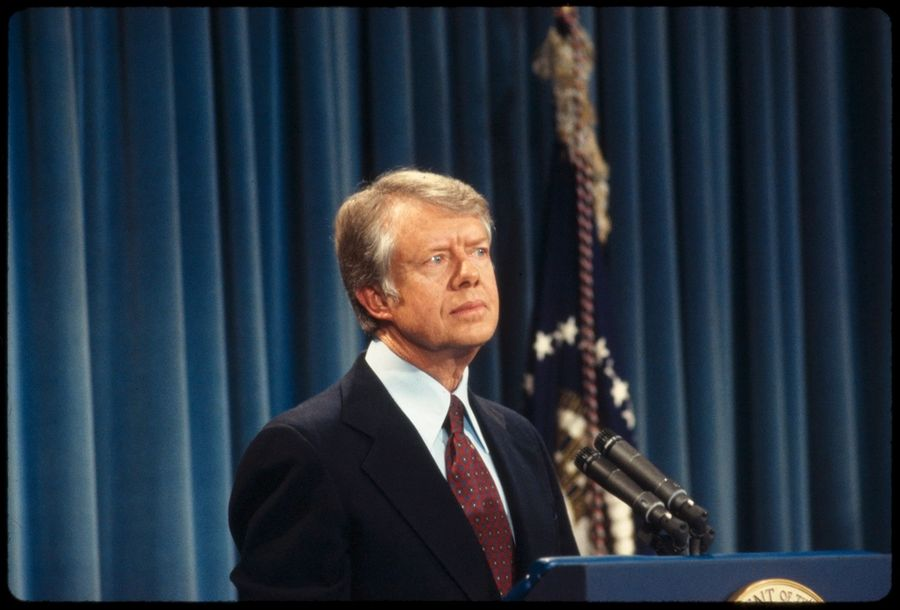

🇯🇵 日本 10件
 「ご、50歳！？」伝説右腕の“変態投法” 一日限り復活…球界震撼「有形指定文化財」
「ご、50歳！？」伝説右腕の“変態投法” 一日限り復活…球界震撼「有形指定文化財」 「朝からこの爽やかさ」 大谷翔平の“別れ際”に悶絶…画面越しでもオーラMAX「恋しい」
「朝からこの爽やかさ」 大谷翔平の“別れ際”に悶絶…画面越しでもオーラMAX「恋しい」 球速アップを阻む「間違った前屈」 中学強豪が実践…股関節を動かす“一体化”の法則
球速アップを阻む「間違った前屈」 中学強豪が実践…股関節を動かす“一体化”の法則 佐藤輝明の191億円…村上＆岡本の“功績” 1年で風向き一変、米幹部が認めた「過小評価」
佐藤輝明の191億円…村上＆岡本の“功績” 1年で風向き一変、米幹部が認めた「過小評価」 30失点大敗でも「楽しく野球を」 脱・練習漬け→全国へ…社会人発チームが貫く独自育成
30失点大敗でも「楽しく野球を」 脱・練習漬け→全国へ…社会人発チームが貫く独自育成 西武ブルペン丸見えな“本当の理由” オーナー屈服…口説いた「ファンを監督にする」
西武ブルペン丸見えな“本当の理由” オーナー屈服…口説いた「ファンを監督にする」 横浜高校に一体何が？ 慶応に敗れた直後…監督が放った練習禁止令「もうやめようぜ」
横浜高校に一体何が？ 慶応に敗れた直後…監督が放った練習禁止令「もうやめようぜ」 「独身で若かったらこんなもんじゃ済まさんぞ！」中日監督が激怒…バッテリー揃って“正座”
「独身で若かったらこんなもんじゃ済まさんぞ！」中日監督が激怒…バッテリー揃って“正座” 「50歳の投球じゃない」常識を覆す“超低空” ファン絶句…柔軟性が「人間国宝モノ」
「50歳の投球じゃない」常識を覆す“超低空” ファン絶句…柔軟性が「人間国宝モノ」 大谷翔平が突如公開…“無表情”なデコピンに爆笑 隣に国民的スターも「オーラ凄い」
大谷翔平が突如公開…“無表情”なデコピンに爆笑 隣に国民的スターも「オーラ凄い」🇺🇸 アメリカ 19件
 ギブズが爆発も、「アイスマン」ウィリアムズとベアーズがサンクスギビングの激闘で主役を奪うGibbs goes off but 'Iceman' Williams, Bears steal the show in Thanksgiving thrillerケイレブ・ウィリアムズが再び「アイスマン」となり、ベアーズにライオンズ戦での劇的な終盤の勝利をもたらした。
ギブズが爆発も、「アイスマン」ウィリアムズとベアーズがサンクスギビングの激闘で主役を奪うGibbs goes off but 'Iceman' Williams, Bears steal the show in Thanksgiving thrillerケイレブ・ウィリアムズが再び「アイスマン」となり、ベアーズにライオンズ戦での劇的な終盤の勝利をもたらした。 QBロジャース、ウェーバーをクリアし正式にフリーエージェントにQB Rodgers officially a free agent after clearing waiversアーロン・ロジャースは木曜日にウェーバーをクリアし、正式にフリーエージェントとなり、どのチームとも契約できるようになった。
QBロジャース、ウェーバーをクリアし正式にフリーエージェントにQB Rodgers officially a free agent after clearing waiversアーロン・ロジャースは木曜日にウェーバーをクリアし、正式にフリーエージェントとなり、どのチームとも契約できるようになった。 情報筋：ミシガンQBアンダーウッド、ライバルのオハイオ州立大戦で先発見込みSources: Michigan QB Underwood expected to start vs. rival Ohio Stateハムストリングの負傷を抱えていたミシガンのQBブライス・アンダーウッドは、土曜日のオハイオ州立大戦で先発する見込みだと、情報筋がESPNのピート・サメル氏に語った。
情報筋：ミシガンQBアンダーウッド、ライバルのオハイオ州立大戦で先発見込みSources: Michigan QB Underwood expected to start vs. rival Ohio Stateハムストリングの負傷を抱えていたミシガンのQBブライス・アンダーウッドは、土曜日のオハイオ州立大戦で先発する見込みだと、情報筋がESPNのピート・サメル氏に語った。 マイアミ、トップDEがオハイオ州立大へのコミットを撤回した数時間後に全体2位のリクルート、ジェイコブズを獲得Miami lands No. 2 recruit Jacobs hours after top DE decommitted from Ohio State2027年クラスの全体2位のリクルートで5つ星ディフェンシブエンドのD.J.ジェイコブズは、木曜日にオハイオ州立大へのコミットを撤回した数時間後、マイアミへのコミットを表明した。
マイアミ、トップDEがオハイオ州立大へのコミットを撤回した数時間後に全体2位のリクルート、ジェイコブズを獲得Miami lands No. 2 recruit Jacobs hours after top DE decommitted from Ohio State2027年クラスの全体2位のリクルートで5つ星ディフェンシブエンドのD.J.ジェイコブズは、木曜日にオハイオ州立大へのコミットを撤回した数時間後、マイアミへのコミットを表明した。 76ersのブラウン（ハムストリング）がペイサーズ戦を欠場、エンビード（体調不良）は出場不確定76ers' Brown (hamstring) out at Pacers; Embiid (illness) questionable76ersのジェイレン・ブラウン（ハムストリング）は、金曜日のペイサーズ戦のNBAカップで欠場する。ジョエル・エンビード（体調不良）は出場が不確定だ。
76ersのブラウン（ハムストリング）がペイサーズ戦を欠場、エンビード（体調不良）は出場不確定76ers' Brown (hamstring) out at Pacers; Embiid (illness) questionable76ersのジェイレン・ブラウン（ハムストリング）は、金曜日のペイサーズ戦のNBAカップで欠場する。ジョエル・エンビード（体調不良）は出場が不確定だ。 第13週ゲームデー・キックオフ：ライバルへのあからさまな憎しみに勝るものはないWeek 13 Game Day Kickoff: Nothing compares to the outright hatred of a rivalライバルリー・ウィークに何が期待できるか、注目試合や選手から番狂わせの警戒対象チームまで。
第13週ゲームデー・キックオフ：ライバルへのあからさまな憎しみに勝るものはないWeek 13 Game Day Kickoff: Nothing compares to the outright hatred of a rivalライバルリー・ウィークに何が期待できるか、注目試合や選手から番狂わせの警戒対象チームまで。 2026年のミシガンとオハイオ州立大に何が問題だったのか？What went wrong for Michigan and Ohio State in 2026?ミシガンとオハイオ州立大は、土曜日の試合を前に合計9敗を喫している。
2026年のミシガンとオハイオ州立大に何が問題だったのか？What went wrong for Michigan and Ohio State in 2026?ミシガンとオハイオ州立大は、土曜日の試合を前に合計9敗を喫している。 アーロン・ロジャースとマイク・マッカーシーの関係はどうしてここまで悪化したのか、そして今後はどうなるのか？How did things get so bad for Aaron Rodgers and Mike McCarthy, and what's next?今日のニュースはNFLを揺るがし、ESPNのインサイダーたちがQB、コーチ、そして彼らの将来についての見解を共有している。
アーロン・ロジャースとマイク・マッカーシーの関係はどうしてここまで悪化したのか、そして今後はどうなるのか？How did things get so bad for Aaron Rodgers and Mike McCarthy, and what's next?今日のニュースはNFLを揺るがし、ESPNのインサイダーたちがQB、コーチ、そして彼らの将来についての見解を共有している。 チーフスとビルズが2017年のトレードに感謝できる理由、マホームズをカンザスシティにもたらした取引Why the Chiefs and Bills can give thanks to 2017 trade that landed Mahomes in K.C.カンザスシティはパトリック・マホームズ獲得のため順位を上げてトレードし、バッファローはフランチャイズのレフトタックルと複数のプロボウラーを獲得した。
チーフスとビルズが2017年のトレードに感謝できる理由、マホームズをカンザスシティにもたらした取引Why the Chiefs and Bills can give thanks to 2017 trade that landed Mahomes in K.C.カンザスシティはパトリック・マホームズ獲得のため順位を上げてトレードし、バッファローはフランチャイズのレフトタックルと複数のプロボウラーを獲得した。 17歳から25歳まで、各年齢の最有望選手はこちらFrom 17 to 25, here is the best prospect at each age
17歳から25歳まで、各年齢の最有望選手はこちらFrom 17 to 25, here is the best prospect at each age ライブでフォロー：ギブスの3回目のラッシングTDでデトロイトのリードが拡大Follow live: Gibbs' third rushing TD extends Detroit lead
ライブでフォロー：ギブスの3回目のラッシングTDでデトロイトのリードが拡大Follow live: Gibbs' third rushing TD extends Detroit lead マイナーリーグのロゴだけで作ったサンクスギビングディナー？ さあ、召し上がれ！A Thanksgiving dinner made entirely of Minor League logos? Dig in!
マイナーリーグのロゴだけで作ったサンクスギビングディナー？ さあ、召し上がれ！A Thanksgiving dinner made entirely of Minor League logos? Dig in! リリーバーのパック、1年契約でナショナルズへReliever Puk heading to Nationals on 1-year deal
リリーバーのパック、1年契約でナショナルズへReliever Puk heading to Nationals on 1-year deal なぜジョージア工科大学のカップルが、また一つテレビで拡散される瞬間となったのかWhy the Georgia Tech Couple Became Another Viral TV MomentESPNのカレッジフットボール中継で捉えられた若いカップルの口論は、ライブイベント中に動き回るカメラが引き起こした最新のSNS騒動となった。
なぜジョージア工科大学のカップルが、また一つテレビで拡散される瞬間となったのかWhy the Georgia Tech Couple Became Another Viral TV MomentESPNのカレッジフットボール中継で捉えられた若いカップルの口論は、ライブイベント中に動き回るカメラが引き起こした最新のSNS騒動となった。 ベテラン捕手サンチェス、1年契約でマーリンズ入り（情報筋）Veteran backstop Sánchez joining Marlins on 1-year contract (sources)
ベテラン捕手サンチェス、1年契約でマーリンズ入り（情報筋）Veteran backstop Sánchez joining Marlins on 1-year contract (sources) スティーラーズ、ヘッドコーチに関する発言の後、クォーターバックのアーロン・ロジャースを解雇Steelers cut quarterback Aaron Rodgers after he made claims about head coachピッツバーグ・スティーラーズはクォーターバックのアーロン・ロジャースと袂を分かった。この発表は、ロジャースがヘッドコーチについて重大な主張をした後に行われた。
スティーラーズ、ヘッドコーチに関する発言の後、クォーターバックのアーロン・ロジャースを解雇Steelers cut quarterback Aaron Rodgers after he made claims about head coachピッツバーグ・スティーラーズはクォーターバックのアーロン・ロジャースと袂を分かった。この発表は、ロジャースがヘッドコーチについて重大な主張をした後に行われた。 スティーラーズ、QBがテレビでマイク・マッカーシー監督を痛烈に批判した後、アーロン・ロジャースを放出Steelers cut Aaron Rodgers after the QB rips coach Mike McCarthy on TVこの動きは混乱した18時間を締めくくるものとなった。その間、チームは金曜日の…を前に、将来殿堂入りする42歳の選手をベンチに下げ、控えのメイソン・ルドルフを起用すると発表していた。
スティーラーズ、QBがテレビでマイク・マッカーシー監督を痛烈に批判した後、アーロン・ロジャースを放出Steelers cut Aaron Rodgers after the QB rips coach Mike McCarthy on TVこの動きは混乱した18時間を締めくくるものとなった。その間、チームは金曜日の…を前に、将来殿堂入りする42歳の選手をベンチに下げ、控えのメイソン・ルドルフを起用すると発表していた。 サラ・ラングスが2026年の野球シーズン（最高だった！）に感謝している26のこと26 things Sarah Langs is thankful for from the 2026 baseball season (which was the best!)
サラ・ラングスが2026年の野球シーズン（最高だった！）に感謝している26のこと26 things Sarah Langs is thankful for from the 2026 baseball season (which was the best!) サラ・ラングスが2026年の野球シーズン（最高だった！）に感謝している26のこと26 things Sarah Langs is thankful for from the 2026 baseball season (which was the best!)
サラ・ラングスが2026年の野球シーズン（最高だった！）に感謝している26のこと26 things Sarah Langs is thankful for from the 2026 baseball season (which was the best!)🇰🇷 韓国 1件
 ソンナム市の多子世帯向け減免拡大でアイスリンクの講師料が急減…拙速行政との批判성남시 다자녀 감면확대에 빙상장 강사료 급감…졸속행정 비판（ソンナム＝聯合ニュース）イ・ウソン記者＝京畿道ソンナム市が公共体育施設における多子世帯向け減免特典を拡大したことで、タンチョン総合運動場アイスリンクの委託講師たちの個人レッスンの講師料が…
ソンナム市の多子世帯向け減免拡大でアイスリンクの講師料が急減…拙速行政との批判성남시 다자녀 감면확대에 빙상장 강사료 급감…졸속행정 비판（ソンナム＝聯合ニュース）イ・ウソン記者＝京畿道ソンナム市が公共体育施設における多子世帯向け減免特典を拡大したことで、タンチョン総合運動場アイスリンクの委託講師たちの個人レッスンの講師料が…🇬🇧 イギリス 20件
英国、決定戦に勝利し2019年以来初のデビスカップ準決勝進出GB win decider to reach Davis Cup semis for first time since 2019ヘンリー・パッテンとニール・スクプスキがドイツとの勝敗を決めるダブルス戦に勝利し、英国は2019年以来初めてデビスカップの準決勝に進出した。 レイニルドのミスでサンダーランドの不振が続き、ヤギエロニアがヨーロッパリーグで引き分けを奪うReinildo error extends Sunderland woe as Jagiellonia grab Europa League drawヤギエロニア・ビャウィストクのヘッドコーチ、エイドリアン・シエミェニェツ氏は、プレミアリーグの相手と対戦するためのウェアサイドへのこの遠征が、最大のハイライトの一つだと語った。
レイニルドのミスでサンダーランドの不振が続き、ヤギエロニアがヨーロッパリーグで引き分けを奪うReinildo error extends Sunderland woe as Jagiellonia grab Europa League drawヤギエロニア・ビャウィストクのヘッドコーチ、エイドリアン・シエミェニェツ氏は、プレミアリーグの相手と対戦するためのウェアサイドへのこの遠征が、最大のハイライトの一つだと語った。 トーマス・フランクがクリスタル・パレスで初勝利、マクニールがレアル・ソシエダを下すThomas Frank earns first Crystal Palace win as McNeil cuts down Real Sociedadサッカーのシーズンはある瞬間を境に変わることがあり、トーマス・フランクはクリスタル・パレスのその瞬間が残り17分に訪れたここでの場面だったことを願うだろう。ママドゥ・サに正当にリードを許していた。
トーマス・フランクがクリスタル・パレスで初勝利、マクニールがレアル・ソシエダを下すThomas Frank earns first Crystal Palace win as McNeil cuts down Real Sociedadサッカーのシーズンはある瞬間を境に変わることがあり、トーマス・フランクはクリスタル・パレスのその瞬間が残り17分に訪れたここでの場面だったことを願うだろう。ママドゥ・サに正当にリードを許していた。 ケイレブ・ウィリアムズが決勝TDを投げ、ベアーズがサンクスギビングでライオンズを驚かせるCaleb Williams throws for game-winning TD as Bears stun Lions on Thanksgivingシカゴ・ベアーズ39-35デトロイト・ライオンズ。QBは残り3秒でオドゥンゼにTDパスを投げる。デトロイトの連勝は6試合で止まる。ケイレブ・ウィリアムズが逆転の6を投げた。
ケイレブ・ウィリアムズが決勝TDを投げ、ベアーズがサンクスギビングでライオンズを驚かせるCaleb Williams throws for game-winning TD as Bears stun Lions on Thanksgivingシカゴ・ベアーズ39-35デトロイト・ライオンズ。QBは残り3秒でオドゥンゼにTDパスを投げる。デトロイトの連勝は6試合で止まる。ケイレブ・ウィリアムズが逆転の6を投げた。 スティーラーズのオーナーがマイク・マッカーシーを支持し、アーロン・ロジャースの「不服従」を非難Steelers owner backs Mike McCarthy and attacks Aaron Rodgers’s ‘insubordination’アート・ルーニー2世はヘッドコーチに「100％の信頼」を寄せている。QBの激高は容認できないと主張。ピッツバーグ・スティーラーズのオーナー兼社長であるアート・ルーニー2世は、
スティーラーズのオーナーがマイク・マッカーシーを支持し、アーロン・ロジャースの「不服従」を非難Steelers owner backs Mike McCarthy and attacks Aaron Rodgers’s ‘insubordination’アート・ルーニー2世はヘッドコーチに「100％の信頼」を寄せている。QBの激高は容認できないと主張。ピッツバーグ・スティーラーズのオーナー兼社長であるアート・ルーニー2世は、 世界タイトルマッチで初の本格的な攻防、シンダロフが引き分けに踏みとどまるJavokhir Sindarov hangs on for draw in first real fight of world title match3局連続の引き分けで、タイトルマッチは1½―1½となった。シンダロフは39手目で残り8秒まで減った。グケシュ・ドマラジュは最初の休息日明けに白番で指す。グケシュ対シンダロフ戦のすべて
世界タイトルマッチで初の本格的な攻防、シンダロフが引き分けに踏みとどまるJavokhir Sindarov hangs on for draw in first real fight of world title match3局連続の引き分けで、タイトルマッチは1½―1½となった。シンダロフは39手目で残り8秒まで減った。グケシュ・ドマラジュは最初の休息日明けに白番で指す。グケシュ対シンダロフ戦のすべて ベシクタシュ対ハポエル・ベエルシェバ戦での観客トラブルが外交問題に発展Crowd trouble at Besiktas v Hapoel Be’er-Sheva leads to diplomatic incidentトルコの外交トップがジョージアのカウンターパートと話す。ヨーロッパリーグの試合は、警察がスタンドに入ったため中断された。トルコの外交トップはジョージアのカウンター
ベシクタシュ対ハポエル・ベエルシェバ戦での観客トラブルが外交問題に発展Crowd trouble at Besiktas v Hapoel Be’er-Sheva leads to diplomatic incidentトルコの外交トップがジョージアのカウンターパートと話す。ヨーロッパリーグの試合は、警察がスタンドに入ったため中断された。トルコの外交トップはジョージアのカウンター ヨーロッパリーグ：ボーンマス、ディアキテの早期退場にもかかわらず10連勝Europa League: Bournemouth make it 10 wins in a row despite early red for Diakitéマルコ・ローゼ率いるチームが突破に近づく。ミランは逆転でオリンピアコスを破った。ボーンマスはヨーロッパへの自動突破資格の獲得に一歩近づいた
ヨーロッパリーグ：ボーンマス、ディアキテの早期退場にもかかわらず10連勝Europa League: Bournemouth make it 10 wins in a row despite early red for Diakitéマルコ・ローゼ率いるチームが突破に近づく。ミランは逆転でオリンピアコスを破った。ボーンマスはヨーロッパへの自動突破資格の獲得に一歩近づいた エリック・カントナ：「カンフーキックについて後悔することがあるとすれば、別の場所を蹴りたかったということだ」Éric Cantona: ‘If I regret something about the kung fu kick, it’s that I would love to kick him in another place’新しいドキュメンタリーの公開を前に、反省の色を見せないマンチェスター・ユナイテッドの象徴が、イングランドサッカーとの深い絆と自らの暗い衝動について語る。「私はインファンティーノの売却計画が調査される中、FIFA職員が聴取への出席を求められるFifa staff asked to attend interviews as Infantino sell-off scheme investigated民主党がFIFAフォワード・エンタープライズのスキャンダルを調査へ インファンティーノは1月に証言のため召喚される可能性 FIFAの元職員と現職員の何人かは審判が「酔っていた」との主張は「全くの根拠なし」Referee being 'drunk' claims are 'entirely unfounded'アジアサッカー連盟（AFC）チャンピオンズリーグ2の試合でハーフタイムに交代した審判が、試合中に酔っていたことを否定している。ボクシング幹部、試合前にフューリーのメンタルヘルスを評価へBoxing chiefs to assess Fury mental health before fightドキュメンタリーでの暴露を受け、タイソン・フューリーがアンソニー・ジョシュアと戦える状態にあるかを確認するため、彼のメンタルヘルスが評価される。アレクサンダーソン、スウォンジーからの関心に「圧倒されている」Alexandersson 'overwhelmed' by Swansea interestローゼンボリの監督フレイル・アレクサンダーソンは、チャンピオンシップのクラブの監督職をめぐって話をしたことを認めた
エリック・カントナ：「カンフーキックについて後悔することがあるとすれば、別の場所を蹴りたかったということだ」Éric Cantona: ‘If I regret something about the kung fu kick, it’s that I would love to kick him in another place’新しいドキュメンタリーの公開を前に、反省の色を見せないマンチェスター・ユナイテッドの象徴が、イングランドサッカーとの深い絆と自らの暗い衝動について語る。「私はインファンティーノの売却計画が調査される中、FIFA職員が聴取への出席を求められるFifa staff asked to attend interviews as Infantino sell-off scheme investigated民主党がFIFAフォワード・エンタープライズのスキャンダルを調査へ インファンティーノは1月に証言のため召喚される可能性 FIFAの元職員と現職員の何人かは審判が「酔っていた」との主張は「全くの根拠なし」Referee being 'drunk' claims are 'entirely unfounded'アジアサッカー連盟（AFC）チャンピオンズリーグ2の試合でハーフタイムに交代した審判が、試合中に酔っていたことを否定している。ボクシング幹部、試合前にフューリーのメンタルヘルスを評価へBoxing chiefs to assess Fury mental health before fightドキュメンタリーでの暴露を受け、タイソン・フューリーがアンソニー・ジョシュアと戦える状態にあるかを確認するため、彼のメンタルヘルスが評価される。アレクサンダーソン、スウォンジーからの関心に「圧倒されている」Alexandersson 'overwhelmed' by Swansea interestローゼンボリの監督フレイル・アレクサンダーソンは、チャンピオンシップのクラブの監督職をめぐって話をしたことを認めた 防衛費へ資金を回すため、イースト・ミッドランズの主要道路事業が棚上げにMajor East Midlands road projects shelved to divert funding to defence地域の首長は、ダービーにおけるA38号線の工事と、A46号線のニューアーク・バイパス工事の中止について「残念で近視眼的だ」と述べた。長く待望されてきた2つの主要道路計画が中止され復帰するマギルは北アイルランドに何をもたらすか？What will returning Magill bring to Northern Ireland?代表復帰に備えるなか、金曜日の親善試合ギリシャ戦でシモーネ・マギルは北アイルランドに何をもたらすのか？カルバート＝ルーウィン、リーズと2029年までの新契約に署名Calvert-Lewin signs new Leeds deal until 2029イングランド代表ドミニク・カルバート＝ルーウィンは、2029年までリーズ・ユナイテッドに残留する新契約を結んだ。フェラーリは「非常に困難な時期」に直面――ハミルトンFerrari facing 'very challenging times' - Hamiltonルイス・ハミルトンは、自身とチームメートのシャルル・ルクレールとの間でコース上の一連の出来事が起きた結果、フェラーリは「非常に、非常に困難な時期」に直面していると述べたドイツのフライガング、薬物検査の問題で16カ月の出場停止処分Germany's Freigang given 16-month ban over drugs test issuesドイツ代表のラウラ・フライガングは、3回の薬物検査に関する問題で、サッカーから16カ月の出場停止処分を受けた。若手選手をめぐる投票が延期され、SFAは修正案を提示へSFA to deliver revised proposal after young player vote delayedスコットランドサッカー協会は、自国で育った有望選手の出場時間を増やすため、統括団体が当初提示した計画を受けて、SPFLのクラブとの協議を続ける方針だ。フォファナはインタビューについて謝罪した――アロンソ監督Fofana has apologised for interview - Alonsoチェルシーのシャビ・アロンソ監督は、ディフェンダーのウェズレイ・フォファナが、クラブの許可なく応じたインタビューでの物議を醸す発言について謝罪したと述べた。
防衛費へ資金を回すため、イースト・ミッドランズの主要道路事業が棚上げにMajor East Midlands road projects shelved to divert funding to defence地域の首長は、ダービーにおけるA38号線の工事と、A46号線のニューアーク・バイパス工事の中止について「残念で近視眼的だ」と述べた。長く待望されてきた2つの主要道路計画が中止され復帰するマギルは北アイルランドに何をもたらすか？What will returning Magill bring to Northern Ireland?代表復帰に備えるなか、金曜日の親善試合ギリシャ戦でシモーネ・マギルは北アイルランドに何をもたらすのか？カルバート＝ルーウィン、リーズと2029年までの新契約に署名Calvert-Lewin signs new Leeds deal until 2029イングランド代表ドミニク・カルバート＝ルーウィンは、2029年までリーズ・ユナイテッドに残留する新契約を結んだ。フェラーリは「非常に困難な時期」に直面――ハミルトンFerrari facing 'very challenging times' - Hamiltonルイス・ハミルトンは、自身とチームメートのシャルル・ルクレールとの間でコース上の一連の出来事が起きた結果、フェラーリは「非常に、非常に困難な時期」に直面していると述べたドイツのフライガング、薬物検査の問題で16カ月の出場停止処分Germany's Freigang given 16-month ban over drugs test issuesドイツ代表のラウラ・フライガングは、3回の薬物検査に関する問題で、サッカーから16カ月の出場停止処分を受けた。若手選手をめぐる投票が延期され、SFAは修正案を提示へSFA to deliver revised proposal after young player vote delayedスコットランドサッカー協会は、自国で育った有望選手の出場時間を増やすため、統括団体が当初提示した計画を受けて、SPFLのクラブとの協議を続ける方針だ。フォファナはインタビューについて謝罪した――アロンソ監督Fofana has apologised for interview - Alonsoチェルシーのシャビ・アロンソ監督は、ディフェンダーのウェズレイ・フォファナが、クラブの許可なく応じたインタビューでの物議を醸す発言について謝罪したと述べた。🇩🇪 ドイツ 20件
デビスカップ：ドイツ、準々決勝で敗退Davis Cup: Deutschland scheidet im Viertelfinale ausドイツ代表は33年ぶりのデビスカップ優勝を夢見ていた。理論上、その可能性は長らくなかったほど高かった。実際には、同代表は…FCバイエルンは冬に新選手を獲得しなければならないのか？Muss der FC Bayern im Winter neue Spieler holen?リールでの敗戦で、ハリー・ケインが残した穴が明らかになった。これにより圧力が高まり、冬の可能性あるものの緊急性も高まっている デビスカップ：ドイツ、英国に敗れまさかの早期敗退Davis Cup: Deutschland scheitert überraschend früh gegen Großbritannienアレクサンダー・ズベレフの勝利だけでは英国相手に十分ではなかった。ドイツはデビスカップで敗退し、勝敗はダブルスで決まった。ヨシュア・キミッヒがジャマル・ムシアラへの攻撃を批判：FCバイエルン・ミュンヘン、敗者の多いクラブ ― コメントJoshua Kimmich kritisiert Angriff auf Jamal Musiala: FC Bayern München, ein Verein mit vielen Verlierern – Kommentarヨシュア・キミッヒが、監査役会によるジャマル・ムシアラへの攻撃に反論する選手となった。これにより、FCバイエルン内部の分裂にも焦点が当たる。
デビスカップ：ドイツ、英国に敗れまさかの早期敗退Davis Cup: Deutschland scheitert überraschend früh gegen Großbritannienアレクサンダー・ズベレフの勝利だけでは英国相手に十分ではなかった。ドイツはデビスカップで敗退し、勝敗はダブルスで決まった。ヨシュア・キミッヒがジャマル・ムシアラへの攻撃を批判：FCバイエルン・ミュンヘン、敗者の多いクラブ ― コメントJoshua Kimmich kritisiert Angriff auf Jamal Musiala: FC Bayern München, ein Verein mit vielen Verlierern – Kommentarヨシュア・キミッヒが、監査役会によるジャマル・ムシアラへの攻撃に反論する選手となった。これにより、FCバイエルン内部の分裂にも焦点が当たる。 英国勢に敗れて準々決勝敗退：ズベレフらはデビスカップ制覇への挑戦で早期敗退Viertelfinal-Aus gegen Briten: Zverev und Co. scheitern früh an Titel-Mission im Davis Cup
英国勢に敗れて準々決勝敗退：ズベレフらはデビスカップ制覇への挑戦で早期敗退Viertelfinal-Aus gegen Briten: Zverev und Co. scheitern früh an Titel-Mission im Davis Cup 最後から2番目のテストで成功：DHB女子、フランス戦ですでに欧州選手権の仕上がりErfolg im vorletzten Test: DHB-Frauen gegen Frankreich schon in EM-Form安定した守備と効率的な攻撃：ドイツの女子ハンドボール選手たちは、欧州選手権前最後から2番目のテストであるフランス戦で、メダル獲得への正当な希望をヨーロッパリーグ ― ガザ戦争：ベシクタシュ対ハポエル・ベエルシェバで激しい暴動Europa League – Gazakrieg: Schwere Ausschreitungen bei Beşiktaş gegen Hapoel Beer-Shevaガザ戦争はサッカーにも影を落としている。ベシクタシュとベエルシェバの一戦は、すでにジョージアへ移されていた。どうやらあるプラヨーロッパリーグ第5節：レバークーゼンがザグレブに勝利Europa League, 5. Spieltag: Leverkusen gewinnt gegen Zagrebバイヤー04レバークーゼンは、ヨーロッパリーグ第5節でディナモ・ザグレブを破った。マリク・ティルマンが早い段階でレバークーゼンに先制点をもたらした。試合レポ危なげないレバークーゼン、ザグレブで地味な勝利を祝うSouveräne Leverkusener feiern glanzlosen Sieg in Zagreb経験豊かで冷静なパフォーマンスにより、バイエル・レバークーゼンはヨーロッパリーグのディナモ・ザグレブ戦で相手に一切の隙を与えなかった。U21、組み合わせに恵まれる ― オランダとの対決U21 mit Losglück - Duell mit den NiederlandenドイツU21代表は、2027年夏の欧州選手権で、グループDではまず強豪チームとの対戦を避け、ノルウェー、ベルギー、そしてオラ
最後から2番目のテストで成功：DHB女子、フランス戦ですでに欧州選手権の仕上がりErfolg im vorletzten Test: DHB-Frauen gegen Frankreich schon in EM-Form安定した守備と効率的な攻撃：ドイツの女子ハンドボール選手たちは、欧州選手権前最後から2番目のテストであるフランス戦で、メダル獲得への正当な希望をヨーロッパリーグ ― ガザ戦争：ベシクタシュ対ハポエル・ベエルシェバで激しい暴動Europa League – Gazakrieg: Schwere Ausschreitungen bei Beşiktaş gegen Hapoel Beer-Shevaガザ戦争はサッカーにも影を落としている。ベシクタシュとベエルシェバの一戦は、すでにジョージアへ移されていた。どうやらあるプラヨーロッパリーグ第5節：レバークーゼンがザグレブに勝利Europa League, 5. Spieltag: Leverkusen gewinnt gegen Zagrebバイヤー04レバークーゼンは、ヨーロッパリーグ第5節でディナモ・ザグレブを破った。マリク・ティルマンが早い段階でレバークーゼンに先制点をもたらした。試合レポ危なげないレバークーゼン、ザグレブで地味な勝利を祝うSouveräne Leverkusener feiern glanzlosen Sieg in Zagreb経験豊かで冷静なパフォーマンスにより、バイエル・レバークーゼンはヨーロッパリーグのディナモ・ザグレブ戦で相手に一切の隙を与えなかった。U21、組み合わせに恵まれる ― オランダとの対決U21 mit Losglück - Duell mit den NiederlandenドイツU21代表は、2027年夏の欧州選手権で、グループDではまず強豪チームとの対戦を避け、ノルウェー、ベルギー、そしてオラ ヨーロッパリーグ：バイエル・レバークーゼンがディナモ・ザグレブ相手に危なげなく勝利Europa League: Bayer Leverkusen gewinnt souverän bei Dinamo Zagrebチェス世界選手権：ドマラジュ・グケシュとジャヴォヒル・シンダロフが「サンバ・デ・ジャネイロ」をプレイSchach-WM: Dommaraju Gukesh und Javokhir Sindarov spielen den Samba de Janeiroジュネーブにブラジルの雰囲気：世界チャンピオンのドマラジュ・グケシュは、型破りなオープニングで挑戦者を考え込ませる――そしてクールにプレイするデビスカップ：敗退の後は再編が待つDavis-Cup: Nach dem Aus ist vor dem Umbruchドイツはボローニャで開催されたデビスカップで悪くないテニスを見せたが、英国に敗れての敗退は妥当だった。今後、DHB代表は若返りを図ることになるバイアスロン：ユストゥス・シュトレーロウ、バイアスロン開幕戦で2位に躍進Biathlon: Justus Strelow stürmt beim Biathlon-Auftakt auf Platz 2ユストゥス・シュトレーロウは、コントィオラハティでのワールドカップ初戦でいきなり絶好調の一日を送り、2位となった。優勝したのは、表彰台の一番上に立った新人選手だシャルケ04、SCパーダーボルン戦で初となる大一番に臨むSchalke 04 vor erstem Endspiel beim SC PaderbornFCシャルケ04は、共に昇格したSCパーダーボルンと敵地で対戦しなければならない。再び勝利を手にすることへの、ロイヤルブルーズに対するプレッシャーは大きい。フェデリカ・ブリニョーネ――「虎」がアリヴェデルチを告げるFederica Brignone - die Tigerin sagt Arrivederciゲレンデでは虎、それ以外ではチームプレーヤー。フェデリカ・ブリニョーネは、その滑走スタイル、人柄、闘志でスキー界に足跡を残したラウラ・フライガング：代表選手への16カ月の出場停止処分とその影響Laura Freigang: 16 Monate Sperre für Nationalspielerin und die Folgenラウラ・フライガングは、ドーピング検査を3回受け損ねたため2027年10月まで出場停止となり、サッカーW杯も欠場することになる。このフォワードは「心が砕けブンデスリーガ：ボルシア・ドルトムントにとって首位はメンタル面の課題にBundesliga: Tabellenführung wird für Borussia Dortmund zur Kopfsacheバイエルンの不振はボルシア・ドルトムントにとって好機だ。しかし首位の座はBVBにとって精神的な試練となる。
ヨーロッパリーグ：バイエル・レバークーゼンがディナモ・ザグレブ相手に危なげなく勝利Europa League: Bayer Leverkusen gewinnt souverän bei Dinamo Zagrebチェス世界選手権：ドマラジュ・グケシュとジャヴォヒル・シンダロフが「サンバ・デ・ジャネイロ」をプレイSchach-WM: Dommaraju Gukesh und Javokhir Sindarov spielen den Samba de Janeiroジュネーブにブラジルの雰囲気：世界チャンピオンのドマラジュ・グケシュは、型破りなオープニングで挑戦者を考え込ませる――そしてクールにプレイするデビスカップ：敗退の後は再編が待つDavis-Cup: Nach dem Aus ist vor dem Umbruchドイツはボローニャで開催されたデビスカップで悪くないテニスを見せたが、英国に敗れての敗退は妥当だった。今後、DHB代表は若返りを図ることになるバイアスロン：ユストゥス・シュトレーロウ、バイアスロン開幕戦で2位に躍進Biathlon: Justus Strelow stürmt beim Biathlon-Auftakt auf Platz 2ユストゥス・シュトレーロウは、コントィオラハティでのワールドカップ初戦でいきなり絶好調の一日を送り、2位となった。優勝したのは、表彰台の一番上に立った新人選手だシャルケ04、SCパーダーボルン戦で初となる大一番に臨むSchalke 04 vor erstem Endspiel beim SC PaderbornFCシャルケ04は、共に昇格したSCパーダーボルンと敵地で対戦しなければならない。再び勝利を手にすることへの、ロイヤルブルーズに対するプレッシャーは大きい。フェデリカ・ブリニョーネ――「虎」がアリヴェデルチを告げるFederica Brignone - die Tigerin sagt Arrivederciゲレンデでは虎、それ以外ではチームプレーヤー。フェデリカ・ブリニョーネは、その滑走スタイル、人柄、闘志でスキー界に足跡を残したラウラ・フライガング：代表選手への16カ月の出場停止処分とその影響Laura Freigang: 16 Monate Sperre für Nationalspielerin und die Folgenラウラ・フライガングは、ドーピング検査を3回受け損ねたため2027年10月まで出場停止となり、サッカーW杯も欠場することになる。このフォワードは「心が砕けブンデスリーガ：ボルシア・ドルトムントにとって首位はメンタル面の課題にBundesliga: Tabellenführung wird für Borussia Dortmund zur Kopfsacheバイエルンの不振はボルシア・ドルトムントにとって好機だ。しかし首位の座はBVBにとって精神的な試練となる。 ヨシュア・キミッヒ：ここに主将が語るJoshua Kimmich: Hier spricht der Kapitänヨシュア・キミッヒはジャマル・ムシアラを擁護し、バイエルンの首脳陣と対立している。それは勇敢なことだ。キミッヒは心得ているはずだからである：ウリ・ヘーネスは忘れ
ヨシュア・キミッヒ：ここに主将が語るJoshua Kimmich: Hier spricht der Kapitänヨシュア・キミッヒはジャマル・ムシアラを擁護し、バイエルンの首脳陣と対立している。それは勇敢なことだ。キミッヒは心得ているはずだからである：ウリ・ヘーネスは忘れ マインツ：メディア企業VRM、右派ポータル『Nius』の印刷受注を終了Mainz: Medienunternehmen VRM beendet Druckauftrag für rechtes Portal »Nius«右派のオンラインポータル『Nius』は1週間前、メディア企業VRMの支援を受けて、初めて印刷版の新聞も発行した。激しい批判を受け
マインツ：メディア企業VRM、右派ポータル『Nius』の印刷受注を終了Mainz: Medienunternehmen VRM beendet Druckauftrag für rechtes Portal »Nius«右派のオンラインポータル『Nius』は1週間前、メディア企業VRMの支援を受けて、初めて印刷版の新聞も発行した。激しい批判を受け🇮🇳 インド 10件
インフラとドーピング対策、インドがIOCへのプレゼンテーションに盛り込むInfrastructure, anti-doping steps part of India’s presentation to IOCインド代表団は、2036年オリンピック招致に向けたアフマダーバードの準備状況、資金戦略、レガシー計画を強調したディアンドレ・スウィフト、ライオンズ戦で第3クォーターの大半ベンチ ベン・ジョンソンはカイル・モナンガイを起用D'Andre Swift benched for most of third quarter vs Lions as Ben Johnson turns to Kyle MonangaiベアーズのRBディアンドレ・スウィフトは、ライオンズ戦でファンブルに苦しんだ後に外れ、カイル・モナンガイがバックフィールドを引き継いだ。タイリーク・ウィリアムズ、ベアーズTEの負傷映像でコルストン・ラブランドを押したように見え反発を受ける：「本当にひどい」Tyleik Williams faces backlash for apparent push on Colston Loveland in footage of Bears TE’s injury: ‘Absolutely Gross’一連の映像では、コルストン・ラブランドがプレー中に不自然な体勢に陥ったように見える。ウータン・クラン、デトロイトでのライオンズ対ベアーズのサンクスギビング・ハーフタイムショーでレッド・ホット・チリ・ペッパーズのチャド・スミスと共演Wu Tang Clan joins Red Hot Chili Peppers’ Chad Smith for Lions vs Bears Thanksgiving halftime show in Detroitウータン・クランとレッド・ホット・チリ・ペッパーズのドラマー、チャド・スミスが、フォード・フィールドで行われたデトロイト・ライオンズのサンクスギビング・ハーフタイムショーでパフォーマンスを行った。世界チェス選手権：今度はリオ・バリエーションのベルリンでも第3局は引き分けWorld Chess Championship: Now, Berlin with Rio variation too produces a draw in Game 3世界チェス選手権の第3局は激しさを増し、ほぼ5時間、60手に及んだコルストン・ラブランドの感謝祭は早期終了、ベアーズのTEがライオンズ戦で膝を負傷しカートで搬送Colston Loveland’s Thanksgiving Day ends early as Bears TE carted off with knee injury vs Lionsコルストン・ラブランドは、頭にタオルをかけ、カートでフィールドから運ばれる際、明らかに感情をあらわにしていた。ライオンズのDE D.J.ウォナム、背中の負傷で感謝祭のベアーズ戦を欠場Lions DE D.J. Wonnum not playing vs Bears on Thanksgiving Day with back injuryD.J.ウォナムは、週の最初の2回の練習を欠席した後、背中の問題のため出場が不確実とされていた。サイード・モディ国際大会：トリーサ・ジョリー＝ガヤトリ・ゴピチャンド組が準々決勝進出Syed Modi Int'l: Treesa Jolly-Gayatri Gopichand enter QF前回優勝者は同胞のシュレヤ・バラジとプラナビ・ナタラジャンを21-9、21-8で破ったHIL、1月に復活へ、オークションは12月7日に開催予定HIL to return in January, auction set for December 7ただし、リーグは短縮版となり、男子大会は8チームではなく6チームで構成される。ミスがある中、ポチにはいくつか心強い兆しAmid errors, some encouraging signs for Pochマンチェスター・ユナイテッドは守備で落ち着いており、ラメンスの大ミスがなければ勝てたはずだった🇮🇹 イタリア 15件
ヨーロッパリーグ：ハッチンソンがオリンピアコス戦をひっくり返し、ミランを悪夢から救うEuropa League: Hutchinson ribalta l'Olympiacos e salva il Milan dall'incubo0-2から4-2へ。イングランド人選手は1ゴールと2アシスト。プリシッチとモレイラも得点した ミランは先行されるもその後爆発：アテネで逆転し、オリンピアコスに4-2Il Milan va sotto ma poi si scatena: rimonta ad Atene, 4-2 all'Olympiacos悪夢のような前半と後半の立ち上がりの後、アモリム監督のチームが主導権を握り、ヨーロッパリーグで再浮上した。得点者はハッチンソン、シセ、プリシッチ、そしてバスケットボール：ワールドカップに向けたイタリア対トルコ、マッタレッラ氏が来場Basket: Italia-Turchia per i Mondiali, arriva Mattarellaアッズーリはローマで予選の試合に臨み、観客席には初めて国家元首が入るヨーロッパリーグ：オリンピアコス対ミラン 2-4Europa League: Olimpiacos-Milan 2-4アテネでのロッソネリの逆転劇は、ハッチンソンが火付け役となったヨーロッパリーグ：オリンピアコス－ミラン 2-4、ロッソネリが逆転して勝利Europa League: Olympiacos-Milan 2-4, rossoneri recuperano e vinconoリーグフェーズ第5節が行われるU21：イタリア、ユーロ2027でスペイン、アルバニア、フィンランドと同組U21: L'Italia con Spagna, Albania e Finlandia a Euro 2027アッズリーニは6月16日、フィンランド戦で大会初戦を迎える
ミランは先行されるもその後爆発：アテネで逆転し、オリンピアコスに4-2Il Milan va sotto ma poi si scatena: rimonta ad Atene, 4-2 all'Olympiacos悪夢のような前半と後半の立ち上がりの後、アモリム監督のチームが主導権を握り、ヨーロッパリーグで再浮上した。得点者はハッチンソン、シセ、プリシッチ、そしてバスケットボール：ワールドカップに向けたイタリア対トルコ、マッタレッラ氏が来場Basket: Italia-Turchia per i Mondiali, arriva Mattarellaアッズーリはローマで予選の試合に臨み、観客席には初めて国家元首が入るヨーロッパリーグ：オリンピアコス対ミラン 2-4Europa League: Olimpiacos-Milan 2-4アテネでのロッソネリの逆転劇は、ハッチンソンが火付け役となったヨーロッパリーグ：オリンピアコス－ミラン 2-4、ロッソネリが逆転して勝利Europa League: Olympiacos-Milan 2-4, rossoneri recuperano e vinconoリーグフェーズ第5節が行われるU21：イタリア、ユーロ2027でスペイン、アルバニア、フィンランドと同組U21: L'Italia con Spagna, Albania e Finlandia a Euro 2027アッズリーニは6月16日、フィンランド戦で大会初戦を迎える 「Xファクター」、イラマのボンボローニとイエッツィ＝ガッバーニの和解が話題の準決勝。採点X Factor,la semifinale tra i bomboloni di Irama e la pace Iezzi-Gabbani. Le pagelle2人が脱落し、夜の終盤は緊張感の高いフィナーレとなった。
「Xファクター」、イラマのボンボローニとイエッツィ＝ガッバーニの和解が話題の準決勝。採点X Factor,la semifinale tra i bomboloni di Irama e la pace Iezzi-Gabbani. Le pagelle2人が脱落し、夜の終盤は緊張感の高いフィナーレとなった。 Eリーグ：アモリム「勝利が未来を変える、この精神は何かの始まりだ」E.League: Amorim 'vittoria cambia il futuro, questo spirito è inizio di qualcosa'「後半は良かったが、まだミスが多すぎる。ハッチンソンは才能があり、驚きではない」ヨーロッパリーグ、ユヴェントス対オモニアを生中継Europa League, in campo Juventus-Omonia DIRETTAリーグフェーズ第5節が行われている。ムシアラの件がバイエルンを二分、キミッヒ：「人間がクラブより優先される」Il caso Musiala spacca il Bayern, Kimmich: 'L'uomo viene prima del club'その選手は身体的な問題を抱えており、クラブは1億の契約を減らしたいと考えているデビスカップ：スペイン、アルカラス不在でもオーストリアに2-0で勝利Davis: la Spagna vince sull'Austria 2-0 anche senza Alcarazイベリア勢の勝利はダブルスを経ずに決まり、次は準決勝でイギリスと対戦する。ジェノア：インテル戦に向けてエスティゴードは依然出場が微妙、オトアが準備Genoa: Ostigard ancora in dubbio per la sfida all'Inter, si scalda Otoaネラッズーリ戦ではヌレディニとコロンボの欠場が確実。
Eリーグ：アモリム「勝利が未来を変える、この精神は何かの始まりだ」E.League: Amorim 'vittoria cambia il futuro, questo spirito è inizio di qualcosa'「後半は良かったが、まだミスが多すぎる。ハッチンソンは才能があり、驚きではない」ヨーロッパリーグ、ユヴェントス対オモニアを生中継Europa League, in campo Juventus-Omonia DIRETTAリーグフェーズ第5節が行われている。ムシアラの件がバイエルンを二分、キミッヒ：「人間がクラブより優先される」Il caso Musiala spacca il Bayern, Kimmich: 'L'uomo viene prima del club'その選手は身体的な問題を抱えており、クラブは1億の契約を減らしたいと考えているデビスカップ：スペイン、アルカラス不在でもオーストリアに2-0で勝利Davis: la Spagna vince sull'Austria 2-0 anche senza Alcarazイベリア勢の勝利はダブルスを経ずに決まり、次は準決勝でイギリスと対戦する。ジェノア：インテル戦に向けてエスティゴードは依然出場が微妙、オトアが準備Genoa: Ostigard ancora in dubbio per la sfida all'Inter, si scalda Otoaネラッズーリ戦ではヌレディニとコロンボの欠場が確実。 Xファクター2026、準決勝が到来：残るのは4人だけX Factor 2026, arriva la semifinale: resteranno solo in quattro11月26日木曜日、Skyでカバー曲の夜に2人が脱落する。SayfがXファクター・アリーナのステージにゲスト出演ルクレール：「ハミルトンとは話し合っているが、フェラーリの雰囲気は良くない」Leclerc: “Con Hamilton ci stiamo parlando, ma l’atmosfera in Ferrari non è buona”モナコ出身の同選手は、ラスベガスで明らかになったチームメートとの度重なる問題についての質問に答えたバニャイア：「脳震盪があるので、テストすらできない」。サーキットに立つことなくドゥカティに別れBagnaia: “Ho una commozione cerebrale, non posso fare neanche i test”. Addio senza pista alla Ducatiボルゴ・パニガーレの赤いチームで2つの世界選手権を制したイタリア人ライダーは、バレンシアで開催される最終戦に出場できない。しかし、その2日後も
Xファクター2026、準決勝が到来：残るのは4人だけX Factor 2026, arriva la semifinale: resteranno solo in quattro11月26日木曜日、Skyでカバー曲の夜に2人が脱落する。SayfがXファクター・アリーナのステージにゲスト出演ルクレール：「ハミルトンとは話し合っているが、フェラーリの雰囲気は良くない」Leclerc: “Con Hamilton ci stiamo parlando, ma l’atmosfera in Ferrari non è buona”モナコ出身の同選手は、ラスベガスで明らかになったチームメートとの度重なる問題についての質問に答えたバニャイア：「脳震盪があるので、テストすらできない」。サーキットに立つことなくドゥカティに別れBagnaia: “Ho una commozione cerebrale, non posso fare neanche i test”. Addio senza pista alla Ducatiボルゴ・パニガーレの赤いチームで2つの世界選手権を制したイタリア人ライダーは、バレンシアで開催される最終戦に出場できない。しかし、その2日後も🇨🇦 カナダ 12件
オタワ・レッドブラックス、1シーズンでヘッドコーチ兼GMのライアン・ディンウィディーを解任Ottawa Redblacks fire coach, GM Ryan Dinwiddie after 1 seasonオタワ・レッドブラックスは、ヘッドコーチ兼ゼネラルマネージャーのライアン・ディンウィディーを、1シーズンで1勝しか挙げられなかったとして解任した。アリッサ・ホワイトの4ポイントの活躍でカナダがパラホッケー世界選手権でノルウェーを10-0で下すAlyssa White's 4-point game leads Canada past Norway 10-0 at Para hockey worldsアリッサ・ホワイトは2ゴール2アシストを記録し、カナダは木曜日に行われた女子パラホッケー世界選手権の予選ラウンドでノルウェーを10-0で快勝したオリンピックのブレイキン王者フィル・ウィザード、トロントで手の届かなかったタイトルを狙うOlympic breaking champion Phil Wizard takes aim at elusive title in Toronto高校時代、フィリップ・キムはコンピューター教室に忍び込んでRed Bull BC One World Finalを観ていた。日曜日、フィル・ウィザードとして知られるカナダのBボーイは、珍しい3日間の休みでラプターズが振り返り、立て直しへRare three-day break lets Raptors reflect, resetアメリカの感謝祭と重なった珍しい3日間の休みにより、スコッティ・バーンズとトロント・ラプターズのチームメートは立ち止まり、立て直す機会を得た ダグ・フォード氏、住宅侵入に「反撃」するよう人々に呼びかけDoug Ford encourages people to 'fight back' against home invasions州首相は銃を所有しており、自宅に侵入しようとする者に対してためらわずに使うと述べ、銃を持たない人にはナイフや野球のバットを使うよう勧めている…
ダグ・フォード氏、住宅侵入に「反撃」するよう人々に呼びかけDoug Ford encourages people to 'fight back' against home invasions州首相は銃を所有しており、自宅に侵入しようとする者に対してためらわずに使うと述べ、銃を持たない人にはナイフや野球のバットを使うよう勧めている… ダグ・フォード氏、オンタリオ州民に住宅侵入への「反撃」を呼びかけDoug Ford encourages Ontarians to 'fight back' against home invasions州首相は、自身が銃を所有しており、自宅に侵入しようとする者に対してはためらわず使用すると述べ、銃を持たない人にはナイフや野球バットを使うよう助言した。
ダグ・フォード氏、オンタリオ州民に住宅侵入への「反撃」を呼びかけDoug Ford encourages Ontarians to 'fight back' against home invasions州首相は、自身が銃を所有しており、自宅に侵入しようとする者に対してはためらわず使用すると述べ、銃を持たない人にはナイフや野球バットを使うよう助言した。 U2、NFLハーフタイムのパフォーマンスでドリー・パートンに敬意を表すU2 salutes Dolly Parton in NFL halftime performanceU2は水曜の夜、L近郊で行われたNFLの試合のハーフタイムで、故人の音楽アイコンをフィーチャーした新曲を演奏し、ドリー・パートンへ感動的な敬意を表した。
U2、NFLハーフタイムのパフォーマンスでドリー・パートンに敬意を表すU2 salutes Dolly Parton in NFL halftime performanceU2は水曜の夜、L近郊で行われたNFLの試合のハーフタイムで、故人の音楽アイコンをフィーチャーした新曲を演奏し、ドリー・パートンへ感動的な敬意を表した。 バブコック監督、戦いで疲弊したオイラーズに休息を指示Babcock prescribes rest for battle-weary Oilersエドモントン・オイラーズのマイク・バブコック監督は、過酷な2週間の日程で疲労した選手たちに、疲れた体を休めるため木曜日は休むよう伝えた
バブコック監督、戦いで疲弊したオイラーズに休息を指示Babcock prescribes rest for battle-weary Oilersエドモントン・オイラーズのマイク・バブコック監督は、過酷な2週間の日程で疲労した選手たちに、疲れた体を休めるため木曜日は休むよう伝えた B.C.ライオンズ、2029年のグレイ・カップを開催へB.C. Lions to host Grey Cup in 2029カナディアン・フットボール・リーグは、B.C.ライオンズが2029年に第116回グレイ・カップを開催すると発表した。FIFAのハッカーが「業務情報と個人情報」にアクセスしていたと同組織が発表FIFA hackers had access to ‘business and personal information,’ organization saysこの侵害は、ワールドカップの持分を売却しようとする秘密裏の計画が頓挫し、FIFAとその会長ジャンニ・インファンティーノが厳しい目を向けられている時期に起きたFIFA、サイバー攻撃の被害に遭い「個人情報およびビジネス情報」にアクセスされたと発表FIFA says it has been victim of a cyberattack accessing 'personal and business information'FIFAはサイバー攻撃の被害を受け、ハッカーが、サッカーの世界統括団体が「限定的な個人情報およびビジネス情報」と説明するものにアクセスした第61回バニエ・カップで、カラバンズはまれな連覇を狙い、マスタングスは新たな勝利の時代を求めるCarabins look for rare repeat, while Mustangs in search of new winning era in 61st Vanier Cup前回優勝のモントリオール・カラバンズは土曜日（東部時間正午）、ケベック・シティのスタッド・テラスで行われる第61回バニエ・カップに出場し、対
B.C.ライオンズ、2029年のグレイ・カップを開催へB.C. Lions to host Grey Cup in 2029カナディアン・フットボール・リーグは、B.C.ライオンズが2029年に第116回グレイ・カップを開催すると発表した。FIFAのハッカーが「業務情報と個人情報」にアクセスしていたと同組織が発表FIFA hackers had access to ‘business and personal information,’ organization saysこの侵害は、ワールドカップの持分を売却しようとする秘密裏の計画が頓挫し、FIFAとその会長ジャンニ・インファンティーノが厳しい目を向けられている時期に起きたFIFA、サイバー攻撃の被害に遭い「個人情報およびビジネス情報」にアクセスされたと発表FIFA says it has been victim of a cyberattack accessing 'personal and business information'FIFAはサイバー攻撃の被害を受け、ハッカーが、サッカーの世界統括団体が「限定的な個人情報およびビジネス情報」と説明するものにアクセスした第61回バニエ・カップで、カラバンズはまれな連覇を狙い、マスタングスは新たな勝利の時代を求めるCarabins look for rare repeat, while Mustangs in search of new winning era in 61st Vanier Cup前回優勝のモントリオール・カラバンズは土曜日（東部時間正午）、ケベック・シティのスタッド・テラスで行われる第61回バニエ・カップに出場し、対🇦🇺 オーストラリア 3件
 オーストラリアのラグビーセブンズのスター、五輪金メダルという目標の達成に意欲Aussie rugby sevens star driven to 'tick off' goal of Olympic goldオーストラリアは2016年以降、ラグビーセブンズで五輪タイトルを獲得していないが、ティア・ハインズとチームメイトはロサンゼルス大会で表彰台に上がる決意を固めている…
オーストラリアのラグビーセブンズのスター、五輪金メダルという目標の達成に意欲Aussie rugby sevens star driven to 'tick off' goal of Olympic goldオーストラリアは2016年以降、ラグビーセブンズで五輪タイトルを獲得していないが、ティア・ハインズとチームメイトはロサンゼルス大会で表彰台に上がる決意を固めている… バービーの多様な顔とファッションがメルボルンの新たな展覧会で主役にThe many faces and fashions of Barbie star in new Melbourne exhibitionバービーの多様な顔を祝う新たな展覧会に、テニスのレジェンド2人とわれらがカイリーがサプライズ登場した。ワラビーズ最年長デビュー選手の1人の背景にある驚くべき歩みThe remarkable journey behind one of oldest Wallabies debutantsジェームズ・ラムは学校でファーストXVでプレーしたことがなく、かつてはラグビーよりも体操に集中していたが、トップまでの長い道のりはワラビーズでのデビューで締めくくられることになる
バービーの多様な顔とファッションがメルボルンの新たな展覧会で主役にThe many faces and fashions of Barbie star in new Melbourne exhibitionバービーの多様な顔を祝う新たな展覧会に、テニスのレジェンド2人とわれらがカイリーがサプライズ登場した。ワラビーズ最年長デビュー選手の1人の背景にある驚くべき歩みThe remarkable journey behind one of oldest Wallabies debutantsジェームズ・ラムは学校でファーストXVでプレーしたことがなく、かつてはラグビーよりも体操に集中していたが、トップまでの長い道のりはワラビーズでのデビューで締めくくられることになる🇪🇸 スペイン 5件
スペイン、モンテネグロで好調なプレーを見せ、カタール・ワールドカップへまた一歩前進España se gusta en Montenegro y da otro pasito más hacia el Mundial de Qatar代表チームはポドゴリツァで最良のパフォーマンスを発揮し、ワールドカップ予選で6勝目を挙げた。オリオラが地元チームを打ち破り チーム一丸となったスペイン、モンテネグロで勢いを取り戻すUna España muy coral recobra el pulso en Montenegroチュス・マテオ監督率いる代表チームは62-93で勝利し、2027年ワールドカップ予選で大きく前進した
チーム一丸となったスペイン、モンテネグロで勢いを取り戻すUna España muy coral recobra el pulso en Montenegroチュス・マテオ監督率いる代表チームは62-93で勝利し、2027年ワールドカップ予選で大きく前進した フェラン・バッサス、「ピックルボール」のコートを作るスペイン代表ポイントガードFerran Bassas, el base de España que monta pistas de ‘pickleball’マンレサ所属の同選手は、代表チームにおける中堅層の価値を象徴している。代表は今週木曜日、モンテネグロで重要な一戦に臨む
フェラン・バッサス、「ピックルボール」のコートを作るスペイン代表ポイントガードFerran Bassas, el base de España que monta pistas de ‘pickleball’マンレサ所属の同選手は、代表チームにおける中堅層の価値を象徴している。代表は今週木曜日、モンテネグロで重要な一戦に臨む メリダ、デビュー戦の緊張を克服し、デビスカップでスペインにオーストリア戦のリードをもたらすMérida supera los nervios de su estreno y adelanta a España ante Austria en la Copa Davis若手選手は序盤、ジョエル・シュヴェルツラーの攻勢に驚かされたが、最終的にはベースラインから優位性を発揮した。ホダルがロディオノフを破れば、
メリダ、デビュー戦の緊張を克服し、デビスカップでスペインにオーストリア戦のリードをもたらすMérida supera los nervios de su estreno y adelanta a España ante Austria en la Copa Davis若手選手は序盤、ジョエル・シュヴェルツラーの攻勢に驚かされたが、最終的にはベースラインから優位性を発揮した。ホダルがロディオノフを破れば、 メリダとホダル、新たな風とイギリスとの準決勝Mérida y Jódar, nuevos vientos y unas semifinales contra Gran Bretaña前者は巧みなプレーでシュワルツラーを破り（6-4、6-4）、後者はラディオノフ相手に悪いスタートから巻き返した（2-6、6-0、6-1）。土曜日には、ドイツを破った相手と
メリダとホダル、新たな風とイギリスとの準決勝Mérida y Jódar, nuevos vientos y unas semifinales contra Gran Bretaña前者は巧みなプレーでシュワルツラーを破り（6-4、6-4）、後者はラディオノフ相手に悪いスタートから巻き返した（2-6、6-0、6-1）。土曜日には、ドイツを破った相手と🇲🇽 メキシコ 9件
メキシコU-12代表が米国の無敗を止めるNovena mexicana Sub-12 le quita lo invicto a EUメキシコのU-12野球代表は、ドミニカ共和国で開催中のパンアメリカン選手権のスーパーラウンドで3勝目を挙げた フリオ・セサール・チャベスが、カネロ・アルバレスはボクシングで決して自分を超えることはないと断言する理由Por qué Julio César Chávez asegura que Canelo Álvarez nunca lo va a superar en boxeo偉大なメキシコ人チャンピオンは、戦った時代が大きく異なると主張し、無敗で90試合を続けた自身の歴史的な記録を振り返った。投稿「Por qué Julio César」2連覇中のPSG、ローマと引き分けEl bicampeón PSG iguala con la Romaインファンティーノ氏がFIFAのイメージを傷つけたと田嶋氏が非難Infantino dañó la imagen de la FIFA, acusa Tashima東京。FIFA次期会長候補の一人である日本の田嶋幸三氏は、世界のサッカー統括団体のイメージがスペイン、モロッコに2030年ワールドカップ決勝を奪われることを懸念Teme España que Marruecos le arrebate la final del Mundial 2030マドリード。スペイン、モロッコ、ポルトガルが共同開催する2030年ワールドカップの決勝は、争いの種となっているロジャース、物議を醸す発言の後にスティーラーズを退団Rodgers, fuera de los Acereros tras polémicas declaracionesアーロン・ロジャースのピッツバーグでの時代は終わった。スティーラーズは昨日、ある番組のインタビューでの彼の発言を受けてクォーターバックを解雇したスポーツ予算は2027年に増加：27億4100万ペソを受け取るPresupuesto para el deporte aumentará en 2027: recibirá 2 mil 741 millones de pesos国家身体文化・スポーツ委員会（Conade）のロンメル・パチェコ長官は、2027年にメキシコのスポーツが約の増額を受けることを歓迎した昇格廃止をめぐり、上院での公開討論を提案Proponen discusión pública en el Senado por eliminación del ascensoリーガMXにおける昇格・降格の廃止は、社会のさまざまな層に大きな不満を引き起こしている。この状況を受け、議論しようとしているトルーカ、モハメドとの別れの始まりにアトラスに勝利El Toluca comienza la despedida de Mohamed con triunfo sobre Atlasトルーカはアントニオ・モハメドのもとで、メキシコサッカーで何年も失っていた主役の座を取り戻した。今、ディアブロス・ロホスは監督を送り出そうとしている
フリオ・セサール・チャベスが、カネロ・アルバレスはボクシングで決して自分を超えることはないと断言する理由Por qué Julio César Chávez asegura que Canelo Álvarez nunca lo va a superar en boxeo偉大なメキシコ人チャンピオンは、戦った時代が大きく異なると主張し、無敗で90試合を続けた自身の歴史的な記録を振り返った。投稿「Por qué Julio César」2連覇中のPSG、ローマと引き分けEl bicampeón PSG iguala con la Romaインファンティーノ氏がFIFAのイメージを傷つけたと田嶋氏が非難Infantino dañó la imagen de la FIFA, acusa Tashima東京。FIFA次期会長候補の一人である日本の田嶋幸三氏は、世界のサッカー統括団体のイメージがスペイン、モロッコに2030年ワールドカップ決勝を奪われることを懸念Teme España que Marruecos le arrebate la final del Mundial 2030マドリード。スペイン、モロッコ、ポルトガルが共同開催する2030年ワールドカップの決勝は、争いの種となっているロジャース、物議を醸す発言の後にスティーラーズを退団Rodgers, fuera de los Acereros tras polémicas declaracionesアーロン・ロジャースのピッツバーグでの時代は終わった。スティーラーズは昨日、ある番組のインタビューでの彼の発言を受けてクォーターバックを解雇したスポーツ予算は2027年に増加：27億4100万ペソを受け取るPresupuesto para el deporte aumentará en 2027: recibirá 2 mil 741 millones de pesos国家身体文化・スポーツ委員会（Conade）のロンメル・パチェコ長官は、2027年にメキシコのスポーツが約の増額を受けることを歓迎した昇格廃止をめぐり、上院での公開討論を提案Proponen discusión pública en el Senado por eliminación del ascensoリーガMXにおける昇格・降格の廃止は、社会のさまざまな層に大きな不満を引き起こしている。この状況を受け、議論しようとしているトルーカ、モハメドとの別れの始まりにアトラスに勝利El Toluca comienza la despedida de Mohamed con triunfo sobre Atlasトルーカはアントニオ・モハメドのもとで、メキシコサッカーで何年も失っていた主役の座を取り戻した。今、ディアブロス・ロホスは監督を送り出そうとしている🇷🇺 ロシア 3件
「ベシクタシュ」がヨーロッパリーグの試合で「ハポエル」に勝利"Бешикташ" обыграл "Хапоэль" в матче Лиги Европы バトゥミでイスラエルとトルコのサッカークラブの試合中に騒動。試合は30分間中断されたВ Батуми произошли беспорядки во время игры израильского и турецкого футбольных клубов. Матч останавливали на полчасаバトゥミのスタジアムで、トルコのクラブ「ベシクタシュ」とベエルシェバのイスラエルのクラブ「ハポエル」のサッカーの試合中に騒動が始まった。
バトゥミでイスラエルとトルコのサッカークラブの試合中に騒動。試合は30分間中断されたВ Батуми произошли беспорядки во время игры израильского и турецкого футбольных клубов. Матч останавливали на полчасаバトゥミのスタジアムで、トルコのクラブ「ベシクタシュ」とベエルシェバのイスラエルのクラブ「ハポエル」のサッカーの試合中に騒動が始まった。 スペイン代表、デビスカップ準決勝進出Сборная Испании вышла в полуфинал Кубка Дэвиса
スペイン代表、デビスカップ準決勝進出Сборная Испании вышла в полуфинал Кубка Дэвиса🇮🇩 インドネシア 9件
ミカエル・シアニパル氏、FFIをめぐる論争を鎮めるためPSSIに意思疎通を開くよう要請Michael Sianipar Minta PSSI Buka Komunikasi Demi Redam Polemik FFI2024～2028年のFFI会長ミカエル・シアニパル氏は、PSSI会長のエリック・トヒル氏がFFIにおける論争を鎮めるために意思疎通を開くことを期待している。リーズ・ユナイテッド、ドミニク・カルバート＝ルーウィンとの契約を延長Leeds United perpanjang kontrak Dominic Calvert-Lewinリーズ・ユナイテッドは、ストライカーのドミニク・カルバート＝ルーウィンとの契約を2年半延長することを正式に発表し、これにより同選手はノッティンガム対チェルシー戦に懸かるシャビ・アロンソの運命Pertaruhan Nasib Xabi Alonso di Nottingham vs Chelseaスペイン人監督シャビ・アロンソは、プレミアリーグ第12節のノッティンガム・フォレスト戦を前にチェルシーのパフォーマンスが低下する中、プレッシャーにさらされている。マイケル・シアニパル：FFI、国家予算からの資金を得る前に民間が資金援助Michael Sianipar: FFI Dibiayai Swasta Sebelum Dapat dari APBNFFI会長のマイケル・シアニパル氏は、フットサルのために民間から1690億ルピアの資金があったことを明らかにした。同氏はFFIとPSSIの財務監査に同意した。BWFが新フォーマットを発表：世界選手権とトマス・ユーバー杯にグループステージBWF Umumkan Format Baru: Fase Grup di Kejuaraan Dunia dan Thomas-UberBWFは、2027年と2028年から世界選手権、スディルマンカップ、トマス杯とユーバー杯に大きな変更を行うと発表した。グループステージや新たなポイントシステムなどが含まれる。イラオラ：イサクはリバプールで最高の時期にあるIraola: Isak dalam Momen Terbaik di Liverpoolリバプールの監督、アンドニ・イラオラは、アレクサンダー・イサクが素晴らしい時期にあると評価している。田嶋氏、FIFA会長選でインファンティーノ氏に対抗するためディアロ氏と組む可能性を示すTashima Buka Opsi Gabung Diallo Lawan Infantino Jadi Presiden FIFAFIFA会長候補の田嶋幸三氏は、ジャンニ・インファンティーノ氏に対抗するため、フィリップ・ディアロ氏と協力する選択肢を残している。ハキム・ダニシュ、Moto3バレンシア2026を前に祈りを求めるHakim Danish Minta Didoakan Jelang Moto3 Valencia 2026ハキム・ダニシュは、取り組む上で熱意と懸命な努力だけに頼るのではなく、Moto3バレンシア2026を前に求める祈りも支えとしている。パデルENGAGEMATCH Vol.1がまもなく開催、盛り上がりにご期待を！Padel ENGAGEMATCH Vol.1 Segera Digelar, Nantikan Keseruannya!CNN Indonesiaのパデル大会ENGAGEMATCH Vol.1は2026年11月28～29日に開催される。競い合い、コミュニティのネットワークを築くため、今すぐ登録しよう！🇳🇱 オランダ 16件
U-21オランダ代表、欧州選手権でノルウェーと再戦へ、ドイツとベルギーも同組Jong Oranje treft Noorwegen opnieuw op EK, ook Duitsland en België in pouleU-21オランダ代表は来年のU-21欧州選手権のグループステージで、ドイツ、ノルウェー、ベルギーと対戦する。木曜日夜にベオグラードで行われた抽選で決まった。ライブ｜欧州サッカー｜アヤックス、オランダ勢にとって慌ただしい夜の口火を切るLive | Europees voetbal | Ajax opent drukke avond Nederlandse clubsこのライブブログへようこそ！私たちはリプケ・バッケルとスース・テン・カテです。今夜の欧州サッカーの最新情報をお届けします。AZとNECが…に出場しますベシクタシュ対イスラエルのハポエル・ベエルシェバ戦、ジョージアで乱闘騒ぎにより中断Besiktas tegen Israëlisch Hapoel Beer-Sheva in Georgië stilgelegd na vechtpartijenトルコのベシクタシュとイスラエルのハポエル・ベエルシェバによるヨーロッパリーグの試合は、前半に長時間中断した。その理由はブニダが2ゴールでアヤックスをトゥーン戦勝利に導く、ベルフハイスが華麗な締めくくりBounida leidt Ajax langs Thun met twee goals, Berghuis zorgt voor fraai slotakkoordアヤックスはカンファレンスリーグで好調を維持している。アムステルダムのチームはヨハン・クライフ・アレーナで、現在9位のFCトゥーンに4-0で快勝した。大幅にメンバーを入れ替えたアヤックス、デ・クラシケル直前にヨーロッパで快勝Fors gewijzigd Ajax boekt vlak voor De Klassieker overtuigende zege in Europaアヤックスは、フェイエノールトとのデ・クラシケルの3日前に、カンファレンスリーグで快勝を収めた。アムステルダムの同クラブは、大幅に変更した布陣で勝利した。ヤデ・フルーネワウト、ヴィンテルスヴァイクの天然氷マラソンで優勝Jade Groenewoud pakt marathonzege op natuurijs in Winterswijk今冬初の天然氷でのスケートマラソンは、女子ではヤデ・フルーネワウトが優勝した。ロイヤルA-ウェア所属でヘンゲロー出身の22歳は、ヴィンテルスヴァイクで初の女性IOC副会長デフランツ氏（74）が死去Eerste vrouwelijke IOC-vicevoorzitter DeFrantz (74) overleden1997年に国際オリンピック委員会（IOC）初の女性副会長となった米国人のアニータ・デフランツ氏が、74歳で死去した…UEFA、世界サッカー連盟からの圧力に関するデ・ヨング氏の発言を受け、FIFAに調査を求めるUEFA roept FIFA op tot onderzoek na uitspraken De Jong over druk van wereldvoetbalbond欧州サッカー連盟UEFAは、FIFAのジャンニ・インファンティーノ会長を支持するようオランダサッカー協会（KNVB）がどのように圧力を受けたかについて、調査を行うよう求めている。そこライブ｜欧州サッカー｜アヤックスがトゥーン相手にリード、後にNEC、トゥウェンテ、AZLive | Europees voetbal | Ajax leidt tegen Thun, later NEC, Twente en AZこのライブブログへようこそ！私たちはリプケ・バッケルとスース・テン・カテで、今夜の欧州サッカーの最新情報をお届けします。AZとNECはdで試合に臨む
ライブ｜欧州サッカー｜アヤックスが前半終了時点で2-0とリード、続いてNEC、トゥウェンテ、AZLive | Europees voetbal | Ajax leidt bij rust met 2-0, later NEC, Twente en AZこのライブブログへようこそ！私たちはリプケ・バッケルとスース・テン・カテです。今夜の欧州サッカーの最新情報をお伝えします。AZとNECは ライブ｜欧州サッカー｜アレーナでアヤックスの大勝を祝う、ウェグホルストの兄弟はトゥエンテのアウェー応援席にLive | Europees voetbal | ArenA viert ruime zege Ajax, broer Weghorst in uitvak Twenteこのライブブログへようこそ！私たちはリプケ・バッケルとスース・テン・カテです。今夜の欧州サッカーの最新情報をお届けします。AZとNECはライブ｜欧州サッカー｜NECが同点弾を許し、AZとトウェンテがリードを許すLive | Europees voetbal | NEC incasseert gelijkmaker, AZ en Twente staan achterこのライブブログへようこそ！私たちはリプケ・バッケルとスース・テン・カテで、今夜の欧州サッカーの模様を随時お伝えします。AZとNECが出場します。サイクリングチームVisma - Lease a Bike、Vismaのタイトルスポンサー撤退で新名称へWielerploeg Visma - Lease a Bike krijgt nieuwe naam met vertrek Visma als naamsponsorサイクリングチームVisma - Lease a Bikeは来年から別の名称になる。どの名称になるかはまだ分かっておらず、12月に明らかになる。ロナウドは1000ゴールまであと何ゴール必要か？幻のゴールをめぐる議論Hoeveel goals moet Ronaldo nog voor zijn duizendste? Discussie over spookdoelpuntサッカー界は長らく、クリスティアーノ・ロナウドが1000ゴールという節目に到達するまでの歩みを一緒に数えてきた。しかし、その集計は正しいのだろうか。先週火曜日には報じら……ドーピング検査を受けなかったドイツ代表フライガング選手、2027年ワールドカップを逃すGemiste dopingcontroles kosten Duits international Freigang WK 2027ドイツ代表のラウラ・フライガング選手は、ドーピング検査を3回受けなかったため、1年間の出場停止処分を受けた。アイントラハト・フランクフルト所属のこのサッカー選手は…キミッヒ、病気のムシアラをめぐるバイエルンのレジェンドたちの「理解不能な」発言を批判Kimmich hekelt 'onbegrijpelijke' uitspraken Bayern-iconen over zieke Musialaバイエルン・ミュンヘンのミッドフィールダー、ジョシュア・キミッヒは、2人の発言を受けて、クラブのレジェンドであるウリ・ヘーネスとカール＝ハインツ・ルンメニゲを強く批判した
ライブ｜欧州サッカー｜アレーナでアヤックスの大勝を祝う、ウェグホルストの兄弟はトゥエンテのアウェー応援席にLive | Europees voetbal | ArenA viert ruime zege Ajax, broer Weghorst in uitvak Twenteこのライブブログへようこそ！私たちはリプケ・バッケルとスース・テン・カテです。今夜の欧州サッカーの最新情報をお届けします。AZとNECはライブ｜欧州サッカー｜NECが同点弾を許し、AZとトウェンテがリードを許すLive | Europees voetbal | NEC incasseert gelijkmaker, AZ en Twente staan achterこのライブブログへようこそ！私たちはリプケ・バッケルとスース・テン・カテで、今夜の欧州サッカーの模様を随時お伝えします。AZとNECが出場します。サイクリングチームVisma - Lease a Bike、Vismaのタイトルスポンサー撤退で新名称へWielerploeg Visma - Lease a Bike krijgt nieuwe naam met vertrek Visma als naamsponsorサイクリングチームVisma - Lease a Bikeは来年から別の名称になる。どの名称になるかはまだ分かっておらず、12月に明らかになる。ロナウドは1000ゴールまであと何ゴール必要か？幻のゴールをめぐる議論Hoeveel goals moet Ronaldo nog voor zijn duizendste? Discussie over spookdoelpuntサッカー界は長らく、クリスティアーノ・ロナウドが1000ゴールという節目に到達するまでの歩みを一緒に数えてきた。しかし、その集計は正しいのだろうか。先週火曜日には報じら……ドーピング検査を受けなかったドイツ代表フライガング選手、2027年ワールドカップを逃すGemiste dopingcontroles kosten Duits international Freigang WK 2027ドイツ代表のラウラ・フライガング選手は、ドーピング検査を3回受けなかったため、1年間の出場停止処分を受けた。アイントラハト・フランクフルト所属のこのサッカー選手は…キミッヒ、病気のムシアラをめぐるバイエルンのレジェンドたちの「理解不能な」発言を批判Kimmich hekelt 'onbegrijpelijke' uitspraken Bayern-iconen over zieke Musialaバイエルン・ミュンヘンのミッドフィールダー、ジョシュア・キミッヒは、2人の発言を受けて、クラブのレジェンドであるウリ・ヘーネスとカール＝ハインツ・ルンメニゲを強く批判した🇧🇪 ベルギー 9件
 絶好調のデ・カイパー：ベルギー代表選手がブライトンでカンファレンスリーグの見事なゴールを決める（VIDEO）De Cuyper on fire : le Diable inscrit un joli but avec Brighton en Conference League (VIDEO)マキシム・デ・カイパーは木曜日の夜、カンファレンスリーグで見事なゴールを決めた。...ベルギー、2027年U21欧州選手権で「死の組」に入る：「だが、物流面では前向きな要素もある」La Belgique hérite du groupe de la mort pour l’Euro U21 2027 : "Mais il y a du positif sur le plan logistique”ギル・スウェルツ監督率いるチームは、7カ月後に真価を発揮しなければならない。...
絶好調のデ・カイパー：ベルギー代表選手がブライトンでカンファレンスリーグの見事なゴールを決める（VIDEO）De Cuyper on fire : le Diable inscrit un joli but avec Brighton en Conference League (VIDEO)マキシム・デ・カイパーは木曜日の夜、カンファレンスリーグで見事なゴールを決めた。...ベルギー、2027年U21欧州選手権で「死の組」に入る：「だが、物流面では前向きな要素もある」La Belgique hérite du groupe de la mort pour l’Euro U21 2027 : "Mais il y a du positif sur le plan logistique”ギル・スウェルツ監督率いるチームは、7カ月後に真価を発揮しなければならない。... ダヴィド・ユベールが望むように、ユニオンが「めちゃくちゃいいチーム」になりたいなら、レフ・ポズナン戦のような試合の入り方はもう失敗できないSi l’Union veut devenir une “putain de bonne équipe”, comme le souhaite David Hubert, elle ne peut plus rater ses entames comme contre Lech Poznan最悪の前半に足を引っ張られ、ユニオン・サン＝ジロワーズは0-2とリードされ、PKも外した。その後2-2まで追いついた。しかし、打ち破ることはできな
ダヴィド・ユベールが望むように、ユニオンが「めちゃくちゃいいチーム」になりたいなら、レフ・ポズナン戦のような試合の入り方はもう失敗できないSi l’Union veut devenir une “putain de bonne équipe”, comme le souhaite David Hubert, elle ne peut plus rater ses entames comme contre Lech Poznan最悪の前半に足を引っ張られ、ユニオン・サン＝ジロワーズは0-2とリードされ、PKも外した。その後2-2まで追いついた。しかし、打ち破ることはできな 止まらないディエゴ・モレイラ：その「悪魔」が試合終盤にゴールを決め、ミランの勝利を決定づける（動画）On n’arrête plus Diego Moreira : le Diable plante un but en fin de match et scelle la victoire de Milan (VIDÉO)ディエゴ・モレイラはオリンピアコス戦でもミランで再び活躍を見せた。…カンファレンスリーグ：ブライトンとデ・カイパーが大活躍、ヴランケン率いるハーツはモナコに番狂わせを許すConference League: Brighton et De Cuyper cartonnenr, les Hearts de Vrancken surpris par Monaco2点目を決めたマキシム・デ・カイパーは、リーグフェーズ第4節でブライトンがウニヴェルシタテア・クラヨーヴァに4-0で勝利した試合で目立った役割を果たした。「ワウトの12月中旬の復帰が最も可能性の高い選択肢だ」：代表監督アンジェロ・デ・クレルクがワールドカップ開幕を展望"Une reprise de Wout à la mi-décembre, c’est l’option la plus probable" : le coach national Angelo De Clercq préface l’ouverture de la Coupe du mondeワールドカップは2026年11月27日金曜日、チェコのオストラヴァで、夜間に開催されるレースで開幕する。寒さによって…が保たれる可能性がある
止まらないディエゴ・モレイラ：その「悪魔」が試合終盤にゴールを決め、ミランの勝利を決定づける（動画）On n’arrête plus Diego Moreira : le Diable plante un but en fin de match et scelle la victoire de Milan (VIDÉO)ディエゴ・モレイラはオリンピアコス戦でもミランで再び活躍を見せた。…カンファレンスリーグ：ブライトンとデ・カイパーが大活躍、ヴランケン率いるハーツはモナコに番狂わせを許すConference League: Brighton et De Cuyper cartonnenr, les Hearts de Vrancken surpris par Monaco2点目を決めたマキシム・デ・カイパーは、リーグフェーズ第4節でブライトンがウニヴェルシタテア・クラヨーヴァに4-0で勝利した試合で目立った役割を果たした。「ワウトの12月中旬の復帰が最も可能性の高い選択肢だ」：代表監督アンジェロ・デ・クレルクがワールドカップ開幕を展望"Une reprise de Wout à la mi-décembre, c’est l’option la plus probable" : le coach national Angelo De Clercq préface l’ouverture de la Coupe du mondeワールドカップは2026年11月27日金曜日、チェコのオストラヴァで、夜間に開催されるレースで開幕する。寒さによって…が保たれる可能性がある パトリスはボス級の活躍、シラは失態、ラウルは不器用ながらも得点者：レフ・ポズナンと引き分けた後のユニオン選手の採点Patris en patron, Sylla fautif et Raul maladroit mais buteur : les notes des Unionistes après le nul contre Lech Poznanダヴィド・ユベール監督率いるチームは、ポーランドのチームを逆転することはできなかった。...パレスチナ国旗をめぐって観客席で乱闘：ベシクタシュ対ハポエル・ベエルシェバ戦が中断Bagarre dans les tribunes pour un drapeau palestinien : le match Besiktas – Hapoel Beer Sheva interrompu安全上の理由でジョージアのバトゥミ市に会場が移された、トルコのベシクタシュと…の試合ブラジル人選手2人、犯罪組織との共謀で収監Deux joueurs brésiliens incarcérés pour collusion avec une organisation criminelleバスコ・ダ・ガマのフォワード、ダビド・コレアを含む2人の選手が木曜日、ブラジルで収監された。犯罪組織に協力したとして告発されている
パトリスはボス級の活躍、シラは失態、ラウルは不器用ながらも得点者：レフ・ポズナンと引き分けた後のユニオン選手の採点Patris en patron, Sylla fautif et Raul maladroit mais buteur : les notes des Unionistes après le nul contre Lech Poznanダヴィド・ユベール監督率いるチームは、ポーランドのチームを逆転することはできなかった。...パレスチナ国旗をめぐって観客席で乱闘：ベシクタシュ対ハポエル・ベエルシェバ戦が中断Bagarre dans les tribunes pour un drapeau palestinien : le match Besiktas – Hapoel Beer Sheva interrompu安全上の理由でジョージアのバトゥミ市に会場が移された、トルコのベシクタシュと…の試合ブラジル人選手2人、犯罪組織との共謀で収監Deux joueurs brésiliens incarcérés pour collusion avec une organisation criminelleバスコ・ダ・ガマのフォワード、ダビド・コレアを含む2人の選手が木曜日、ブラジルで収監された。犯罪組織に協力したとして告発されている🇸🇪 スウェーデン 10件
スウェーデン、欧州選手権前のリハーサルマッチでアイスランドに敗れるSverige föll i EM-genrepet mot Islandスウェーデンは欧州選手権前の最初のリハーサルマッチでアイスランドに敗れた。代表に復帰したニーナ・コッパングがスウェーデンの最優秀選手に選ばれた。― 彼女の姿を見るのは本当に素晴らしいクラングと歓喜のパフォーマンスで、レーグレがスケレフテオを17秒で沈めたClang och jubelföreställning när Rögle sänkte Skellefteå på 17 sekunderレーグレは8連敗を喫してスケレフテオでの試合に臨んだ。しかしスコーネのチームは、スウェーデン選手権決勝の再戦を4-1で制し、再び勝利の軌道に戻った。ユールゴーデンが5連敗を喫した試合で、スター選手が審判を殴打する場面Här slår stjärnan till domaren när Djurgården förlorade femte rakaユールゴーデンは5連敗――するとアウェーのベクショー戦の終盤には、かなりいら立った空気になった。ユールゴーデンのキャプテン、マルクス・クルーガーは退場処分となった――その後ボストン・マラソンで倒れたランナーを助け、称賛されるPrisas efter att ha hjälpt löpare som kollapsade på Boston Marathonアジェイ・ハリダッセはボストン・マラソンでゴールまで300メートルのところで倒れた。そのとき2人のランナー仲間に助けられ、今、その2人は国際陸上競技連盟から称賛されている開幕戦でノルウェー勢が相次いで嘔吐：「あまり気持ちよさそうには見えない」Norsk spykavalkad i premiären: ”Det ser inte så skönt ut”ノルウェーのスター選手たちがフィンランドを黄色く染めている。開幕戦でフィニッシュしたノルウェー選手たちは次々と嘔吐した。「あまり気持ちよさそうには見えない」とヴェトレ・ショースタッド・クリスティアは言うミャルビー、欧州で初黒星 ― カイラト・アルマトイに敗れるFörsta förlusten för Mjällby i Europa – föll mot Kairat Almatyミャルビーは欧州で無敗だった。これまでは。ミャルビーがカザフスタンのカイラト・アルマトイに敗れた試合では、ホーム側のゴールキーパーが大活躍した。エングラ・ニルソン、シーズンを欠場へ――手術を余儀なくされるEngla Nilsson ställer in säsongen – tvingas till operationエングラ・ニルソンは手術を余儀なくされた。けがにより室内シーズン全体を欠場することになる。「最終的に手術が唯一の選択肢になった」と、彼女はインスタグラムに書いたエドヴィン・アンゲル、ルカでのスプリントを欠場：「100％の状態ではない」Edvin Anger står över sprinten i Ruka: ”Inte i hundra form”エドヴィン・アンゲルは、先週末のスウェーデン開幕戦が非常に厳しい結果となったことを受け、ルカでのワールドカップ開幕戦の土曜日のスプリントを欠場することにした。大会を前に、彼は複数のことについて語るリサ・エリクソン、出場停止後の教訓について語る「今は賢くなった」Lisa Eriksson om lärdomarna efter avstängningen: ”Smartare nu”リサ・エリクソンは、ジュニアからシニアへ移行しようとしていた際に、過負荷のため代表チームによって競技から外された。23歳の彼女は今、定着を図ろうとしているグレアム・クラークはすべての交代で同じことをする：「多すぎるかもしれない…」Graeme Clarke gör samma sak – i varje byte: ”Kanske för mycket...”グレアム・クラークはフレールンダの攻撃面での得点を牽引し、チーム内の得点王となっている。その成功の背景にあるかもしれない一つの細部がこれだ。―彼はパックで何かをしたがっている…🇸🇦 サウジアラビア 5件
 ベシクタシュ対ハポエル・ベエルシェバ、警察がスタンドに入り試合中断Besiktas v Hapoel Beer-Sheva suspended after police enter standsベシクタシュとハポエル・ベエルシェバのヨーロッパリーグの試合は、警察がスタンドに入ったため30分間中断した。試合はバトゥミで開催されていたテベス、ロナウドが記念試合でメッシに加わることを期待Tevez hopes Ronaldo will join Messi at testimonialブエノスアイレス発：元アルゼンチン代表ストライカーのカルロス・テベスは木曜日、リオネル・メッシが来月行われる自身の記念試合に出場すると述べ、クリスティアーノ・ロナウドについても自信を示した。FIFA、個人情報と業務情報にアクセスするサイバー攻撃の被害を受けたと発表FIFA says it has been victim of a cyberattack accessing ‘personal and business information’チューリヒ：FIFAはサイバー攻撃の被害を受け、ハッカーが、サッカーの世界統括団体が「限られた一部の個人および業務情報」と表現する情報にアクセスした。レクサムのタフガイ・コーチ、プレミアリーグ昇格への最新の挑戦の最中に職を離れるWrexham’s tough-man coach is leaving role during latest bid to reach the Premier Leagueロンドン：有名人オーナーを擁するチームをプレミアリーグへ導こうとする最新の試みの中で、レクサムのフィル・パーキンソン監督は間もなく長年のナンバー2を失うことになる。F1が中東へ向かう中、フェルスタッペンがカタールでの4勝目を狙うVerstappen seeks fourth Qatar win as F1 heads to Middle Eastマックス・フェルスタッペンは、カタール・グランプリで4連勝を飾ることを目指し、2レース…に近づくフォーミュラ1シーズンにおける支配を固めようとしている
ベシクタシュ対ハポエル・ベエルシェバ、警察がスタンドに入り試合中断Besiktas v Hapoel Beer-Sheva suspended after police enter standsベシクタシュとハポエル・ベエルシェバのヨーロッパリーグの試合は、警察がスタンドに入ったため30分間中断した。試合はバトゥミで開催されていたテベス、ロナウドが記念試合でメッシに加わることを期待Tevez hopes Ronaldo will join Messi at testimonialブエノスアイレス発：元アルゼンチン代表ストライカーのカルロス・テベスは木曜日、リオネル・メッシが来月行われる自身の記念試合に出場すると述べ、クリスティアーノ・ロナウドについても自信を示した。FIFA、個人情報と業務情報にアクセスするサイバー攻撃の被害を受けたと発表FIFA says it has been victim of a cyberattack accessing ‘personal and business information’チューリヒ：FIFAはサイバー攻撃の被害を受け、ハッカーが、サッカーの世界統括団体が「限られた一部の個人および業務情報」と表現する情報にアクセスした。レクサムのタフガイ・コーチ、プレミアリーグ昇格への最新の挑戦の最中に職を離れるWrexham’s tough-man coach is leaving role during latest bid to reach the Premier Leagueロンドン：有名人オーナーを擁するチームをプレミアリーグへ導こうとする最新の試みの中で、レクサムのフィル・パーキンソン監督は間もなく長年のナンバー2を失うことになる。F1が中東へ向かう中、フェルスタッペンがカタールでの4勝目を狙うVerstappen seeks fourth Qatar win as F1 heads to Middle Eastマックス・フェルスタッペンは、カタール・グランプリで4連勝を飾ることを目指し、2レース…に近づくフォーミュラ1シーズンにおける支配を固めようとしている🇹🇷 トルコ 4件
トルコ、ジョージアでベシクタシュのファンに対して行使された力について懸念を表明Türkiye raises concerns over force used against Besiktas fans in Georgiaムスタファ・チフチ内相はジョージアの相手と事件について協議し、同氏はUEFAの関係者がパレスチナの旗を没収したと述べたトルコのクラブ、ジョージアでのベシクタシュのサポーターに対する警察の介入を非難Turkish clubs condemn police intervention against Besiktas fans in Georgiaトルコのサッカークラブは、イスラエルのクラブとのヨーロッパリーグの試合が警察の介入により中断されたことを受け、直ちにベシクタシュを支持する声明を発表したトルコのクラブと関係者、ジョージアでのベシクタシュファンに対する警察の介入を非難Turkish clubs, officials condemn police intervention against Besiktas fans in Georgiaイスラエルのクラブとのヨーロッパリーグ戦が警察の介入で中断された後、トルコのサッカークラブは直ちにベシクタシュを支持する声明を発表した。ベシクタシュ、UEFAヨーロッパリーグの試合中にジョージアでファンに対する不釣り合いな力の行使を非難Besiktas condemns disproportionate force against fans in Georgia during UEFA Europa League matchイスタンブールのクラブは、理事会メンバーと関係者がバトゥミのトルコ総領事館とともに状況を注視していると述べている。🇦🇷 アルゼンチン 12件
「血で払うことになるぞ」：アルゼンチンのテニス選手フアン・マヌエル・ラ・セルナが、SNSで受け取る賭博者からの脅迫を公開"Vas a pagar con sangre": el tenista argentino Juan Manuel La Serna mostró las amenazas de apostadores que recibe en las redes若手の有望選手は、試合後に受け取る脅迫的なメッセージを自身のSNSで公開した。この事例は、賭博者による嫌がらせの度合いを具体的に示している チェックインで右往左往：カタールへ飛ぶ前のコラピントのトラブルとヘルメットのジレンマA los volantazos en el check-in: los problemas de Colapinto antes de volar a Qatar y el dilema del cascoアルピーヌのドライバーは、6位で終えた注目すべきF1レースの後、ラスベガスを出発する際に起きた出来事を語った。
チェックインで右往左往：カタールへ飛ぶ前のコラピントのトラブルとヘルメットのジレンマA los volantazos en el check-in: los problemas de Colapinto antes de volar a Qatar y el dilema del cascoアルピーヌのドライバーは、6位で終えた注目すべきF1レースの後、ラスベガスを出発する際に起きた出来事を語った。 PAE、10のEikon賞でコミュニケーションと評判におけるリーダーシップを再確認PAE reafirmó su liderazgo en comunicación y reputación con diez premios EikonLNG合弁会社サザン・エナジーの設立は3つの賞を獲得した。審査員団は同社の太陽光発電パーク、ロス・チウイドスや、ある…も称賛した。司法当局、性的虐待で有罪となったボカ女子サッカーの元監督ホルヘ・マルティネスに対する有罪判決を確定La Justicia confirmó la condena contra Jorge Martínez, el exentrenador del fútbol femenino de Boca declarado culpable de abuso sexual破毀院は弁護側の控訴を棄却し、チームの元広報責任者フロレンシア・マルコへの攻撃に対する懲役1年の刑を支持した。テベス、メッシが自身のお別れ試合に出場すると確認、ゲストにフエルテ・アパチェを知ってほしいと希望：クリスティアーノ・ロナウドも加わる？Tevez confirmó que Messi estará en su despedida y quiere que sus invitados conozcan Fuerte Apache: ¿se suma Cristiano Ronaldo?『El Último Baile』は12月20日日曜日、ラ・ボンボネーラで開催される。メッシのほか、フランコ・コラピント、リオ・ファーディナンド、パトリス・エヴラら著名人が参加する。カタールGPを前にF1を揺るがす争い：ラッセルがフェルスタッペンの嘲笑に反論、友達を求めているわけではないと警告La guerra que sacude a la Fórmula 1 en la previa del GP de Qatar: Russell respondió a las burlas de Verstappen y avisó que no busca amigos英国人ドライバーは、数日前に自分を軽視し、ラスベガスでのクラッシュを喜んだマックスの攻撃を皮肉で受け流した。今週末、両者は再びサーキットで顔を合わせる。クラウディオ・ビバス、リベルタドーレス決勝を前にエストゥディアンテスの神秘性を解き明かし、ビエルサと10年間話していないと明かすClaudio Vivas desentrañó la mística de Estudiantes antes de la final de la Libertadores y reveló que lleva 10 años sin hablar con Bielsaロコの元アシスタントは、リベルタドーレス決勝を前にモンテビデオでクラリン紙と語った。さらに、メッシの代表チーム入りにおける自身の役割を振り返った。ブラジルに衝撃：ヴァスコ・ダ・ガマのサッカー選手が殺人未遂の捜査で練習中に拘束されるConmoción en Brasil: un futbolista de Vasco da Gama fue detenido en pleno entrenamiento por una investigación de tentativa de homicidioスダメリカーナでボカの対戦相手であるダヴィド・コレアは、クラブの施設で逮捕された。殺人未遂と、疑われているつながりについて捜査を受けている元ラシンのガストン・マルティレナの感動的な行動：白血病の8歳の少年に家を贈るEl conmovedor gesto del ex Racing, Gastón Martirena: le regaló una casa a un nene de 8 años con leucemiaウルグアイ人のガストン・マルティレナのことであり、彼はラ・アカデミアからウルグアイのナシオナルに期限付き移籍している。彼は8歳の少年に家を贈った、その少年はウラカンに驚き：ディエゴ・マルティネスが「合意の上」でチームの監督を退任し、クラブはSNSで別れを告げたSorpresa en Huracán: Diego Martínez dejó de ser DT del equipo "de común acuerdo" y el club lo despidió en sus redes監督は浮き沈みのあった1年を経て、グロボでの2期目を終えた。良い勝利を収めたが、クラウスーラのベスト16に進出することはできなかった。その投稿はアストン・ヴィラで干されるアレハンドロ・ガルナチョ、出場できず、3回連続でメンバー外となり、SNSからクラブを削除Alejandro Garnacho borrado en Aston Villa: no juega, quedó tres veces seguidas fuera del plantel y eliminó al club en sus redesアルゼンチン出身の同選手は、チャンピオンズリーグの直近の試合ではベンチ入りメンバーにも入らなかった。7月にアストン・ヴィラに加入して以来、出場時間はわずか95分にとどまっている。オリー・ベアマンがハースに残留、F1は2027年のグリッドがすべて確定Ollie Bearman seguirá en Haas y la Fórmula 1 ya tiene su grilla completa para 202721歳のイギリス人ドライバーは、アメリカのチームとの契約を3年連続で延長する。この発表により、カテゴリーは22席すべてを確定させた。
PAE、10のEikon賞でコミュニケーションと評判におけるリーダーシップを再確認PAE reafirmó su liderazgo en comunicación y reputación con diez premios EikonLNG合弁会社サザン・エナジーの設立は3つの賞を獲得した。審査員団は同社の太陽光発電パーク、ロス・チウイドスや、ある…も称賛した。司法当局、性的虐待で有罪となったボカ女子サッカーの元監督ホルヘ・マルティネスに対する有罪判決を確定La Justicia confirmó la condena contra Jorge Martínez, el exentrenador del fútbol femenino de Boca declarado culpable de abuso sexual破毀院は弁護側の控訴を棄却し、チームの元広報責任者フロレンシア・マルコへの攻撃に対する懲役1年の刑を支持した。テベス、メッシが自身のお別れ試合に出場すると確認、ゲストにフエルテ・アパチェを知ってほしいと希望：クリスティアーノ・ロナウドも加わる？Tevez confirmó que Messi estará en su despedida y quiere que sus invitados conozcan Fuerte Apache: ¿se suma Cristiano Ronaldo?『El Último Baile』は12月20日日曜日、ラ・ボンボネーラで開催される。メッシのほか、フランコ・コラピント、リオ・ファーディナンド、パトリス・エヴラら著名人が参加する。カタールGPを前にF1を揺るがす争い：ラッセルがフェルスタッペンの嘲笑に反論、友達を求めているわけではないと警告La guerra que sacude a la Fórmula 1 en la previa del GP de Qatar: Russell respondió a las burlas de Verstappen y avisó que no busca amigos英国人ドライバーは、数日前に自分を軽視し、ラスベガスでのクラッシュを喜んだマックスの攻撃を皮肉で受け流した。今週末、両者は再びサーキットで顔を合わせる。クラウディオ・ビバス、リベルタドーレス決勝を前にエストゥディアンテスの神秘性を解き明かし、ビエルサと10年間話していないと明かすClaudio Vivas desentrañó la mística de Estudiantes antes de la final de la Libertadores y reveló que lleva 10 años sin hablar con Bielsaロコの元アシスタントは、リベルタドーレス決勝を前にモンテビデオでクラリン紙と語った。さらに、メッシの代表チーム入りにおける自身の役割を振り返った。ブラジルに衝撃：ヴァスコ・ダ・ガマのサッカー選手が殺人未遂の捜査で練習中に拘束されるConmoción en Brasil: un futbolista de Vasco da Gama fue detenido en pleno entrenamiento por una investigación de tentativa de homicidioスダメリカーナでボカの対戦相手であるダヴィド・コレアは、クラブの施設で逮捕された。殺人未遂と、疑われているつながりについて捜査を受けている元ラシンのガストン・マルティレナの感動的な行動：白血病の8歳の少年に家を贈るEl conmovedor gesto del ex Racing, Gastón Martirena: le regaló una casa a un nene de 8 años con leucemiaウルグアイ人のガストン・マルティレナのことであり、彼はラ・アカデミアからウルグアイのナシオナルに期限付き移籍している。彼は8歳の少年に家を贈った、その少年はウラカンに驚き：ディエゴ・マルティネスが「合意の上」でチームの監督を退任し、クラブはSNSで別れを告げたSorpresa en Huracán: Diego Martínez dejó de ser DT del equipo "de común acuerdo" y el club lo despidió en sus redes監督は浮き沈みのあった1年を経て、グロボでの2期目を終えた。良い勝利を収めたが、クラウスーラのベスト16に進出することはできなかった。その投稿はアストン・ヴィラで干されるアレハンドロ・ガルナチョ、出場できず、3回連続でメンバー外となり、SNSからクラブを削除Alejandro Garnacho borrado en Aston Villa: no juega, quedó tres veces seguidas fuera del plantel y eliminó al club en sus redesアルゼンチン出身の同選手は、チャンピオンズリーグの直近の試合ではベンチ入りメンバーにも入らなかった。7月にアストン・ヴィラに加入して以来、出場時間はわずか95分にとどまっている。オリー・ベアマンがハースに残留、F1は2027年のグリッドがすべて確定Ollie Bearman seguirá en Haas y la Fórmula 1 ya tiene su grilla completa para 202721歳のイギリス人ドライバーは、アメリカのチームとの契約を3年連続で延長する。この発表により、カテゴリーは22席すべてを確定させた。🇳🇴 ノルウェー 15件
ノルウェー、欧州選手権に向けた調整で圧倒Norge herjet i EM-oppkjøringenノルウェーの女子ハンドボール選手たちはゴールデンリーグでフェロー諸島をあっさり退け、41-23で勝利した…欧州選手権でのノルウェーの対戦相手はこちらHer er Norges motstandere i EMノルウェーのU21サッカー代表は、オリンピック予選も兼ねる今夏の欧州選手権決勝大会でドイツ、オランダ、ベルギーと対戦する。U21代表の欧州選手権決勝大会は ノルウェー、料理世界選手権で金と銀Norge med gull og sølv i kokke-VMノルウェーの料理ナショナルチームCommunity Cateringはきょう、世界チャンピオンとなった。ノルウェー勢が射撃で失敗し、米国勢の勝利へMot amerikansk seier etter at de norske feilet på standplassストゥルラ・ホルム・レーグライドは、フィンランドのコンティオラハティでのワールドカップ開幕戦で、最初の3シリーズをすべて満射とした後、個人種目の勝利を懸けて最終射撃に臨んだノルウェー勢が射撃で失敗し、アメリカが勝利Amerikansk seier etter at de norske feilet på standplassフィンランドのコンティオラハティで開催されたワールドカップ開幕戦の個人種目で、ストゥルラ・ホルム・レグレイドは最初の3回の射撃でいずれも全弾命中させた後、最後の射撃で優勝をかけて撃ったブランにとって悪夢の夜：― 屈辱的でひどいSkrekkveld for Brann: – Ydmykende og frykteligブランはカンファレンスリーグでの勝ち上がりをほぼ確実にできたはずだった。代わりに、デンマークの祝祭のようなサッカーが繰り広げられた…ヨーロッパリーグの試合、スキャンダラスな場面の後に一時中断Europaligakamp midlertidig avbrutt etter skandalescenerジョージアで行われたベシクタシュとハポエル・ベエルシェバのヨーロッパリーグの試合は木曜日、…の際に一時的に中断されたセルロートが筋肉損傷Muskelskade for Sørlothアレクサンダー・セルロートは水曜日のバイキング戦で交代を余儀なくされた。アトレティコ・マドリードはこのほど、公式サイトで「医療報告書」を発表した。それによると、ノルウェー人ストライカーは…ヨーロッパリーグ戦、醜態を受けて一時中断Europaligakamp midlertidig avbrutt etter skandalescenerジョージアで行われたベシクタシュとハポエル・ベエルシェバのヨーロッパリーグ戦は木曜日、観客席で乱闘が発生し、一時中断された。試合は25分弱が経過したところだったハンドボール女子代表、予想通りの勝利 ― フェロー諸島を圧倒Oppskriftsmessig seier fra Håndballjentene – spilte fletta av Færøyeneノルウェーのハンドボール女子代表はice Cupでフェロー諸島を圧倒し、スティヨルダールで41対23で勝利した。12月に開催されるハンドボール欧州選手権に向けたチームの最後から2番目のテストマッチで、U21代表が欧州選手権で対戦するのはこれらのチームDisse møter U21-landslaget i EMノルウェーのU21サッカー代表は、今夏の欧州選手権本大会でドイツ、オランダ、ベルギーと対戦する。同大会は…ボルシュノフ、ロシアでトップ10入りならずBolsjunov ikke topp 10 i Russlandアレクサンドル・ボルシュノフは木曜日のクロスカントリースキーのロシア・カップで、優勝者に1分以上の差をつけられた。距離はクラシカル方式の10キロメートルだった。セルゲイ・アルダシェフが優勝した。ドイツのサッカーのスター選手、ドーピング違反で出場停止Tysk fotballstjerne utestengt for dopingbruddラウラ・フライガング（28）は、ドーピング規則違反により16か月間の出場停止となった。2025年3月11日から2026年2月23日の間に、彼女は3回、報告に関する規則に違反した…出場予定ではなかった ― 結果は表彰台Skulle ikke starte - endte på pallenエミリエ・オーグハイム・カルケンベリは、スウェーデンのイドレで開催されたIBUカップで3位でフィニッシュした。29歳の同選手は、出場を取りやめたグロー・ランドビーの代役として入った。グーロ・イッテルフF1の逸材が新たな契約に署名 ― 2027年の全ドライバー布陣はこうなるFormel 1-juvel signerte ny kontrakt – slik blir hele førerkabalen i 2027F1スターのオリバー・ベアマンが、ハース・チームと新たな1年契約を結んだ。これにより、2027年シーズンの全ドライバーが確定した。
ノルウェー、料理世界選手権で金と銀Norge med gull og sølv i kokke-VMノルウェーの料理ナショナルチームCommunity Cateringはきょう、世界チャンピオンとなった。ノルウェー勢が射撃で失敗し、米国勢の勝利へMot amerikansk seier etter at de norske feilet på standplassストゥルラ・ホルム・レーグライドは、フィンランドのコンティオラハティでのワールドカップ開幕戦で、最初の3シリーズをすべて満射とした後、個人種目の勝利を懸けて最終射撃に臨んだノルウェー勢が射撃で失敗し、アメリカが勝利Amerikansk seier etter at de norske feilet på standplassフィンランドのコンティオラハティで開催されたワールドカップ開幕戦の個人種目で、ストゥルラ・ホルム・レグレイドは最初の3回の射撃でいずれも全弾命中させた後、最後の射撃で優勝をかけて撃ったブランにとって悪夢の夜：― 屈辱的でひどいSkrekkveld for Brann: – Ydmykende og frykteligブランはカンファレンスリーグでの勝ち上がりをほぼ確実にできたはずだった。代わりに、デンマークの祝祭のようなサッカーが繰り広げられた…ヨーロッパリーグの試合、スキャンダラスな場面の後に一時中断Europaligakamp midlertidig avbrutt etter skandalescenerジョージアで行われたベシクタシュとハポエル・ベエルシェバのヨーロッパリーグの試合は木曜日、…の際に一時的に中断されたセルロートが筋肉損傷Muskelskade for Sørlothアレクサンダー・セルロートは水曜日のバイキング戦で交代を余儀なくされた。アトレティコ・マドリードはこのほど、公式サイトで「医療報告書」を発表した。それによると、ノルウェー人ストライカーは…ヨーロッパリーグ戦、醜態を受けて一時中断Europaligakamp midlertidig avbrutt etter skandalescenerジョージアで行われたベシクタシュとハポエル・ベエルシェバのヨーロッパリーグ戦は木曜日、観客席で乱闘が発生し、一時中断された。試合は25分弱が経過したところだったハンドボール女子代表、予想通りの勝利 ― フェロー諸島を圧倒Oppskriftsmessig seier fra Håndballjentene – spilte fletta av Færøyeneノルウェーのハンドボール女子代表はice Cupでフェロー諸島を圧倒し、スティヨルダールで41対23で勝利した。12月に開催されるハンドボール欧州選手権に向けたチームの最後から2番目のテストマッチで、U21代表が欧州選手権で対戦するのはこれらのチームDisse møter U21-landslaget i EMノルウェーのU21サッカー代表は、今夏の欧州選手権本大会でドイツ、オランダ、ベルギーと対戦する。同大会は…ボルシュノフ、ロシアでトップ10入りならずBolsjunov ikke topp 10 i Russlandアレクサンドル・ボルシュノフは木曜日のクロスカントリースキーのロシア・カップで、優勝者に1分以上の差をつけられた。距離はクラシカル方式の10キロメートルだった。セルゲイ・アルダシェフが優勝した。ドイツのサッカーのスター選手、ドーピング違反で出場停止Tysk fotballstjerne utestengt for dopingbruddラウラ・フライガング（28）は、ドーピング規則違反により16か月間の出場停止となった。2025年3月11日から2026年2月23日の間に、彼女は3回、報告に関する規則に違反した…出場予定ではなかった ― 結果は表彰台Skulle ikke starte - endte på pallenエミリエ・オーグハイム・カルケンベリは、スウェーデンのイドレで開催されたIBUカップで3位でフィニッシュした。29歳の同選手は、出場を取りやめたグロー・ランドビーの代役として入った。グーロ・イッテルフF1の逸材が新たな契約に署名 ― 2027年の全ドライバー布陣はこうなるFormel 1-juvel signerte ny kontrakt – slik blir hele førerkabalen i 2027F1スターのオリバー・ベアマンが、ハース・チームと新たな1年契約を結んだ。これにより、2027年シーズンの全ドライバーが確定した。🇩🇰 デンマーク 13件
ヨーロッパのアウェー戦でデンマーク勢にとって良い夜God dansk aften på udebane i EuropaAGFはノルウェーで非常に説得力のある試合を見せ、カンファレンスリーグでブランを4-1で破った。トフト、ジェールでの状況を懸念 ― デンマークへの復帰は否定せずToft bekymret for Györ-situation - udeukker ikke retur til Danmarkこのブログでは、今日のデンマークおよび世界のハンドボールの最新ニュースをお届けします。欧州の重要な試合がデンマークのチームを待つEuropæiske nøglekampe venter for danske holdデンマークの4チームが再びカンファレンスリーグで戦う。そのすべてを、ここのブログとP4の「LIGA」で追うことができる。スカールプとアストルプ、デンマークの欧州選手権代表から外れるSkaarup og Astrup udeladt af Danmarks EM-trupこのブログでは、デンマークおよび国際バドミントンの最新ニュースをお届けします。「私たちが送っているのは甘い生活ではない」：彼はデンマークのためにメダルをかけて戦うが、スカットとの間では向かい風を受けている»Det er ikke det søde liv, vi lever«: Han dyster om medaljer for Danmark, men med Skat sejler han i modvindトップセーラーのフレデリク・ラスクは、半年間、何を糧に生活すればよいのか分からないまま過ごすこともある。今後はヤコブ・エンゲル＝シュミット税務相が、エリート選手たちにより迅速な回答を示す意向だほっとする勝利の後、AGFは「有利なカードを手にしている」Efter forløsende sejr sidder AGF 'med gode kort på hånden'圧巻のAGF、ヨーロッパで初勝利Forrygende AGF tager sin første sejr i EuropaAGFはノルウェーで非常に説得力のある試合を見せ、カンファレンスリーグでブランに4-1で勝利した。専門家：レブロン・ジェームズが新たなNBAスポンサーシップでノボに「さらなるスターのきらめき」をもたらすEkspert: LeBron James kaster 'ekstra stjernedrys' på Novo med nyt NBA-sponsoratスポーツ経済学者によると、ノボ ノルディスクによるNBAチーム、フィラデルフィア・76ersのスポンサーシップは、同社にとっての「パラダイムシフト」を表しているという。シーネ・ブルーン、頭部の負傷を経て代表チームに復帰Signe Bruun er tilbage på landsholdet efter hovedskade「とても厳しく、理想的ではない」：代表選手、クラブで出場機会に恵まれず'Super hårdt og ikke ideelt': Landsholdsspiller savner spilletid i klubbenこのブログでは、今日のデンマークと世界のサッカーの最新ニュースをお届けします。「全く前代未聞だ」：DBUがクラブ側に反論»Det er helt uhørt«: DBU slår tilbage mod klubberDBUはサッカー懲戒機関を支持し、その活動を強化する計画だ。スター選手が監督に最後通告を突き付けた――今、監督は解任されたStjerne gav træneren et ultimatum - nu er han fyretNFL選手のアーロン・ロジャースは、ベンチに下げられてから数時間後に、現在は元ピッツバーグ・スティーラーズ監督となったマイク・マッカーシー監督を激しく批判した。アメリカ人は正直なところ、ケスラーの功績などどうでもいいAmerikaner vil ærligt talt skide på Kesslers bedrifterアメリカ人のバーナード・ジョセフとそのトレーナーは、ミッケル・ケスラーに敬意は持っているが、それ以上のものはない。🇦🇹 オーストリア 12件
オーストリア対スペインの経過と配信Stand und Stream von Österreich – Spanienオーストリアのデビスカップチームは、ボローニャで行われる準々決勝でスペインと対戦する。チェコ、イタリア、イギリスはすでに準決勝進出を果たしているジョージアでのベシクタシュの試合、長時間中断Besiktas-Spiel in Georgien lange unterbrochenザルツブルク、最下位アララトを下しヨーロッパリーグで2勝目Salzburg fährt gegen Schlusslicht Ararat zweiten Sieg in Europa League einブルズは後半開始直後の2ゴールでアルメニアのチームに勝利した。コナテは終盤にPKを外したザルツブルク、最下位チーム相手にホーム勝利を祝うSalzburg feiert Heimsieg gegen SchlusslichtFCザルツブルクは木曜日、UEFAヨーロッパリーグのリーグフェーズ第5節で最下位のアララト相手に順当な勝利を収めた。これにより…世界選手権で3連続引き分けWM liefert drittes Remis in Folgeフェラーリでの争いを受け、ハミルトンとルクレールに箝口令Maulkorb für Hamilton und Leclerc nach Streit bei Ferrariラスベガスで対立が激化した後、両ドライバーはカタール・グランプリを前に発言を控えている。ガッサーとカーラーがビッグエア決勝へ進出Gasser und Karrer springen ins Big-Air-Finaleデフランツ元IOC副会長が死去Ex-IOC-Vizepräsidentin DeFrantz gestorbenフェルミューレンにとってオリンピックの失望が新たな始まりにOlympiafrust als Neustart für Vermeulenオリンピックでの大きな失望について、ミカ・フェルミューレンは6月まで分析に取り組んだ。「あれほど良い出発点があれほどになるよう、私は何をしてしまったのかスペイン、シングルスでアルカラスを起用せずSpanien verzichtet im Einzel auf Alcarazヴォルフ、ベルクイーゼルで危なげなくビッグエア決勝進出を決めるWolf qualifiziert sich am Bergisel souverän für Big-Air-Finaleアメリカ人のライト、開幕でデビュー初勝利を祝うUS-Amerikaner Wright feiert bei Auftakt Debütsieg🇮🇪 アイルランド 18件
アイルランドのスター選手オコナーで「オペレーション・ブレットプルーフ」が進行中'Operation Bulletproof' underway for Irish star O'Connorアイルランドの年間最優秀アスリート（共同受賞）に選ばれたばかりのケイト・オコナーは、可能な限り最高の状態を目指す中で「オペレーション・ブレットプルーフ」が進行中だと述べたHorse Sport Irelandの清算にもかかわらず、アイルランドの馬術チームはロサンゼルス五輪に出場する見込みIrish equestrian teams likely to compete at LA Olympics despite Horse Sport Ireland liquidationHorse Sport Irelandが清算手続きに入るというニュースを受け、総合馬術と障害飛越のチームをめぐって懸念が生じていた。 アイルランド対オーストラリア：ラグビー担当記者がネーションズ・チャンピオンシップ最後の試合のスコアを予想Ireland v Australia: Our rugby writers predict the score for the final Nations Championship outingエイダン・フィッツモーリス：カタールでU-17代表に何が起きるかが、今後10年間でアイルランドサッカーがどのような形になるかを大きく左右するだろうAidan Fitzmaurice: What happens with the U-17s in Qatar will have a big say in how Irish football shapes up over the next decadeリーグ・オブ・アイルランド移籍最新情報：タイリーク・ウィルソンがボヘミアンズに復帰League of Ireland transfer latest: Tyreke Wilson moves back to Bohemiansアイルランド対オーストラリア：知っておくべきすべてのことIreland v Australia: All you need to knowアイルランドにとって初となるネーションズ・チャンピオンシップは、金曜日のオーストラリア戦で幕を閉じ、同国は5位でのフィニッシュを目指す。知っておくべきことはすべてこちらスライゴACのブレット、スポーツ・アイルランド・キャンパスで開催されたU12全国クロスカントリーで優勝Sligo AC's Brett wins U12 National Cross Country helds at the Sports Ireland Campus
アイルランド対オーストラリア：ラグビー担当記者がネーションズ・チャンピオンシップ最後の試合のスコアを予想Ireland v Australia: Our rugby writers predict the score for the final Nations Championship outingエイダン・フィッツモーリス：カタールでU-17代表に何が起きるかが、今後10年間でアイルランドサッカーがどのような形になるかを大きく左右するだろうAidan Fitzmaurice: What happens with the U-17s in Qatar will have a big say in how Irish football shapes up over the next decadeリーグ・オブ・アイルランド移籍最新情報：タイリーク・ウィルソンがボヘミアンズに復帰League of Ireland transfer latest: Tyreke Wilson moves back to Bohemiansアイルランド対オーストラリア：知っておくべきすべてのことIreland v Australia: All you need to knowアイルランドにとって初となるネーションズ・チャンピオンシップは、金曜日のオーストラリア戦で幕を閉じ、同国は5位でのフィニッシュを目指す。知っておくべきことはすべてこちらスライゴACのブレット、スポーツ・アイルランド・キャンパスで開催されたU12全国クロスカントリーで優勝Sligo AC's Brett wins U12 National Cross Country helds at the Sports Ireland Campus 「彼は私にとって父親のような存在だった」――バブス・キーティング、生涯の友人でティップの伝説ドニー・ニーロンを追悼‘He was a father figure to me’ — Babs Keating pays tribute to lifelong friend and Tipp legend Donie Nealon若き学校教師としてアードフィナンでハーリング復活のきっかけを作ったことから、ピッチとサイドラインで共にクローク・パークを制覇したことまで、全アイルランド選手権を5度制した優勝者が元ラグビー解説者のスターマー＝スミス氏が81歳で死去Former rugby broadcaster Starmer-Smith dies aged 81元イングランド代表スクラムハーフで解説者のナイジェル・スターマー＝スミス氏が81歳で死去した。IRFU、「好調」な会計年度を経て150万ユーロの黒字を報告IRFU report €1.5m surplus after 'strong' financial yearIRFUのケビン・ポッツ最高経営責任者は、7月31日に終了した年度で150万ユーロの黒字を報告したことを受け、同協会は競技への投資を「自信を持って継続できる」と述べたブライトン、カンファレンスリーグでクラヨバに快勝Brighton breeze past Craiova in Conference Leagueイブラヒム・オスマンがブライトンでの初ゴールを決め、チームは10人となったウニヴェルシタテア・クラヨバに4-0で快勝し、勝利を取り戻した。テイラー、敗れての競技復帰Taylor makes losing return to competitionフィル・テイラーは、木曜日にポーツマスで開催されたMODUSスーパーシリーズ・インターナショナル・ペアーズ大会で、イングランド代表のチームメートであるエイドリアン・ルイスと組んだ5試合すべてに敗れた。10人になったボーンマス、セルタ・ビーゴ戦で勝利を奪うTen-man Bournemouth snatch victory at Celta Vigoボーンマスは10人になりながらも逆転してセルタ・ビーゴに2-1で勝利し、ヨーロッパリーグのラウンド16への自動進出に一歩近づいた。カルバート＝ルーウィン、リーズ・ユナイテッドと新契約に合意Calvert-Lewin agrees fresh deal with Leeds Unitedリーズは、ストライカーのドミニク・カルバート＝ルーウィンがクラブと新たに2年半の契約を結んだと発表した。ドニー・ニーロンの名は偉大さの代名詞だったDonie Nealon's name was synonymous with greatnessRTÉのGAA担当記者マーティ・モリッシーが、亡くなった友人でティペラリーのハーリングの伝説、ドニー・ニーロンに追悼の意を表する。元ラグビー解説者のナイジェル・スターマー＝スミス氏が81歳で死去Former rugby broadcaster Nigel Starmer-Smith dies aged 81ヨーロッパリーグの最新スコアEuropa League latest scores欧州で多くの試合が行われた一夜。連合の現状：IRFU、上昇するアビバ・スタジアムのチケット価格を擁護、150万ユーロの黒字への復帰とワールドカップ開催地立候補の可能性State of the union: IRFU defend rising Aviva Stadium ticket prices, return to €1.5m profit and potential World Cup bid
「彼は私にとって父親のような存在だった」――バブス・キーティング、生涯の友人でティップの伝説ドニー・ニーロンを追悼‘He was a father figure to me’ — Babs Keating pays tribute to lifelong friend and Tipp legend Donie Nealon若き学校教師としてアードフィナンでハーリング復活のきっかけを作ったことから、ピッチとサイドラインで共にクローク・パークを制覇したことまで、全アイルランド選手権を5度制した優勝者が元ラグビー解説者のスターマー＝スミス氏が81歳で死去Former rugby broadcaster Starmer-Smith dies aged 81元イングランド代表スクラムハーフで解説者のナイジェル・スターマー＝スミス氏が81歳で死去した。IRFU、「好調」な会計年度を経て150万ユーロの黒字を報告IRFU report €1.5m surplus after 'strong' financial yearIRFUのケビン・ポッツ最高経営責任者は、7月31日に終了した年度で150万ユーロの黒字を報告したことを受け、同協会は競技への投資を「自信を持って継続できる」と述べたブライトン、カンファレンスリーグでクラヨバに快勝Brighton breeze past Craiova in Conference Leagueイブラヒム・オスマンがブライトンでの初ゴールを決め、チームは10人となったウニヴェルシタテア・クラヨバに4-0で快勝し、勝利を取り戻した。テイラー、敗れての競技復帰Taylor makes losing return to competitionフィル・テイラーは、木曜日にポーツマスで開催されたMODUSスーパーシリーズ・インターナショナル・ペアーズ大会で、イングランド代表のチームメートであるエイドリアン・ルイスと組んだ5試合すべてに敗れた。10人になったボーンマス、セルタ・ビーゴ戦で勝利を奪うTen-man Bournemouth snatch victory at Celta Vigoボーンマスは10人になりながらも逆転してセルタ・ビーゴに2-1で勝利し、ヨーロッパリーグのラウンド16への自動進出に一歩近づいた。カルバート＝ルーウィン、リーズ・ユナイテッドと新契約に合意Calvert-Lewin agrees fresh deal with Leeds Unitedリーズは、ストライカーのドミニク・カルバート＝ルーウィンがクラブと新たに2年半の契約を結んだと発表した。ドニー・ニーロンの名は偉大さの代名詞だったDonie Nealon's name was synonymous with greatnessRTÉのGAA担当記者マーティ・モリッシーが、亡くなった友人でティペラリーのハーリングの伝説、ドニー・ニーロンに追悼の意を表する。元ラグビー解説者のナイジェル・スターマー＝スミス氏が81歳で死去Former rugby broadcaster Nigel Starmer-Smith dies aged 81ヨーロッパリーグの最新スコアEuropa League latest scores欧州で多くの試合が行われた一夜。連合の現状：IRFU、上昇するアビバ・スタジアムのチケット価格を擁護、150万ユーロの黒字への復帰とワールドカップ開催地立候補の可能性State of the union: IRFU defend rising Aviva Stadium ticket prices, return to €1.5m profit and potential World Cup bid🇸🇬 シンガポール 3件
五輪王者のケリフ、パリでフランスのヘマットとの復帰戦へOlympic champion Khelif to return against France's Hemat in Paris ドイツのフライガング、居場所情報提供の不備による出場停止処分で女子ワールドカップ出場不可にGermany's Freigang ruled out of women's World Cup after whereabouts failures ban
ドイツのフライガング、居場所情報提供の不備による出場停止処分で女子ワールドカップ出場不可にGermany's Freigang ruled out of women's World Cup after whereabouts failures ban インド、2036年オリンピック開催をIOCに訴えるGames-India makes case to IOC for hosting 2036 Olympics
インド、2036年オリンピック開催をIOCに訴えるGames-India makes case to IOC for hosting 2036 Olympics🇲🇾 マレーシア 3件
香港でマレーシアのスカッシュ選手たちにとって厳しい一日にBad day for Malaysian squash players in Hong Kongクアラルンプール発：マレーシア勢の香港フットボールクラブ・スカッシュ・オープンへの挑戦は、木曜日の準々決勝で終わった。ハットトリックの立役者ファイザルがマレーシアをSASカップ決勝へ導くHat-trick hero Faizal powers Malaysia into SAS Cup finalクアラルンプール：マレーシアは土曜日、スルタン・アズラン・シャー・カップ（SAS）決勝で、10度の優勝を誇るオーストラリアと対戦する。ズベレフのドイツ、英国に敗れデビスカップ準決勝進出を逃すZverev's Germany miss out on Davis Cup semi with defeat by Great Britainイタリア・ボローニャ発：英国は木曜日、ボローニャでアレクサンダー・ズベレフ率いるドイツを2対1で破り、デビスカップ準決勝進出を決めた🇹🇭 タイ 4件
ホンダ・タイランド・タレント・カップが2026年シーズンを閉幕、ママイがホームレースで準優勝、ブライトはポイントランキング3位で終えるฮอนด้า ไทยแลนด์ ทาเลนต์ คัพ ปิดฤดูกาล 2026 มะมายรองแชมป์โฮมเรซ ไบร์ทจบที่ 3 คะแนนสะสมホンダ・タイランド・タレント・カップが2026年シーズンを閉幕、ママイが準優勝［…］アーロン・ロジャース、コーチとの問題でスティーラーズに放出され、引退の可能性อารอน ร็อดเจอร์ส ส่อรีไทร์ หลังมีปัญหากับโค้ชจนสตีลเลอร์สปล่อยตัวアーロン・ロジャース、コーチとの問題でスティーラ［…］マヒドン大とチュラーロンコーン大が3連勝で歓喜、ラームカムヘーン大、カセサート大とともにバドミントンUチャンピオンシップ2026の準決勝へ進出มหิดล-จุฬาฯ เฮ 3 นัดรวด ควง รามคำแหง-เกษตรศาสตร์ ลิ่วตัดเชือกแบดมินตัน ยูแชมเปี้ยนชิพ 2026マヒドン大とチュラーロンコーン大が3連勝で歓喜、ラームカムヘーン大、カセサート大とともに勝ち進[…]FIFA、個人情報と事業情報の一部が抜き取られたことを受け、ハッカー集団を非難する声明を発表ฟีฟ่าแถลงประณามกลุ่มแฮกเกอร์ หลังถูกล้วงข้อมูลส่วนบุคคล-ภาคธุรกิจบางส่วนFIFAは、個人情報が抜き取られたことを受け、ハッカー集団を非難する声明を発表した […]🇻🇳 ベトナム 2件
U17ベトナム代表監督、泣きながら手を合わせて選手たちに感謝HLV U17 Việt Nam khóc, chắp tay cảm ơn cầu thủクリスティアーノ・ローランド監督は、今夜行われたグループG最終戦でマリに0-2で敗れ、U17ワールドカップ202での敗退が正式に決まった後、涙ながらにベトナムの選手たちに感謝したポチェッティーノがマンUにもたらした5つの変化5 thay đổi Pochettino tạo ra ở Man Utdマウリシオ・ポチェッティーノ監督は、プレッシングの強化、守備組織の引き締め、選手たちのペナルティーエリアへの侵入を促すことなどで、マンチェスター・ユナイテッドで早くも存在感を示している🇵🇭 フィリピン 11件
フィリピンの男子ダブルスチーム、U19セパタクローで勝利のデビューPH boys doubles team makes winning debut in U19 sepak takrawフィリピン、マニラ――フィリピンは、第1回ASTAF U19アジアセパタクロー選手権での戦いを歴史的な勝利で開幕した。男子ダブルスチームは…「時の流れに真っ向から抗う」レブロン、トリプルダブルを記録した最年長選手にLeBron ‘giving Father Time hell,’ oldest to register T-Dレブロン・ジェームズはNBA史上最年長でトリプルダブルを達成した選手となり、NBAカップでフィラデルフィアをマイアミ・ヒートに114-104で勝利へ導いたPVL：トリシャ・トゥブ、ファーム・フレッシュの躍進で初の決勝進出を味わうPVL: Trisha Tubu savors first Finals after Farm Fresh breakthroughフィリピン、マニラ――トリシャ・トゥブのファーム・フレッシュ・フォクシーズでの歩みは、ついに彼女をプレミア・バレーボール・リーグの決勝へと導いた。元アダムソンのワン・アンド・…PVL：ロビンス・ハーディ、引退前に最後の決勝戦へPVL: Robins-Hardy gets one last Finals run before retirementフィリピン、マニラ――アロヒ・ロビンス・ハーディは、ファーム・フレッシュの初のPVL決勝進出に貢献した後、涙を流した。彼女がそれに感極まっていた一方で、…NCAA：EAC、サン・ベダとの決定戦で再び厳しい戦いに臨む構えNCAA: EAC ready for another tough battle vs San Beda in deciderフィリピン、マニラ――エミリオ・アギナルド・カレッジはNCAAシーズン102の戦いをつないだかもしれないが、ジェルソン・カビルテス監督とジェネラルズは厳しい戦いに備えている…PVL：ファーム・フレッシュ、第1シードのNxledを破り歴史的な決勝進出PVL: Farm Fresh ousts top seed Nxled for historic Finals berthフィリピン、マニラ――ファーム・フレッシュは木曜日も歴史を作り続け、第1シードのNxledを26-24、2…で下し、初のPVL決勝進出を決めたNCAA：MJ・ライムンドが活躍、EACがサン・ベダとの決定戦に持ち込むNCAA: MJ Raymundo delivers as EAC forces decider vs San Bedaフィリピン、マニラ――MJ・ライムンドは木曜日、エミリオ・アギナルド・カレッジのシーズンをつなぎ、ジェネラルズを牽引して第2戦でサン・ベダに75-64で勝利し、決定戦に持ち込ん…NCAA：クリス・フビリャ、失った時間を取り戻し、JRUを決勝へ導くNCAA: Chris Hubilla makes up for lost time, leads JRU to Finalsフィリピン、マニラ――クリス・フビリャは、脚のけがのため、ホセ・リサール大学のNCAAシーズン102予選ラウンドの終盤を欠場した。しかし、…NCAA：JRU、レトランをスイープし、18年ぶりの決勝進出NCAA: JRU ends 18-year Finals drought with sweep of Letranフィリピン、マニラ――ホセ・リサール大学は、シーズン102のファイナルフォー第2戦でレトランを85-7…で破り、NCAA男子バスケットボール決勝への復帰を果たしたタイタン・ウルトラの除外で、PBAにはルーキードラフトの未解決の疑問が残るTitan Ultra ouster leaves PBA with Rookie Draft questions to resolveフィリピン、マニラ――今後のPBAルーキードラフトで、フランチャイズが取り消される前にタイタン・ウルトラが保有するとされていた全体2位指名権はどうなるのか。その… キャスリン・ベルナルドとヒディリン・ディアス、APEAに若きリーダー、業界のパイオニアとして表彰されるKathryn Bernardo, Hidilyn Diaz honored by APEA as young leader, industry pioneer受賞歴のある女優キャスリン・ベルナルドとオリンピック金メダリストのヒディリン・ディアスは、アジア太平洋起業家年次フォーラム（APEA）の2026年アジア太平洋…に選ばれた
キャスリン・ベルナルドとヒディリン・ディアス、APEAに若きリーダー、業界のパイオニアとして表彰されるKathryn Bernardo, Hidilyn Diaz honored by APEA as young leader, industry pioneer受賞歴のある女優キャスリン・ベルナルドとオリンピック金メダリストのヒディリン・ディアスは、アジア太平洋起業家年次フォーラム（APEA）の2026年アジア太平洋…に選ばれた🇳🇿 ニュージーランド 12件
より良い支援を求めてニュージーランドを離れた。今、彼は米バイアスロン史に名を刻んだHe left New Zealand for better support. Now he’s made US biathlon historyロトルア生まれのキャンベル・ライト（24）は、2023年にチームを移籍した後、バイアスロンのワールドカップ種目で優勝した初のアメリカ人となった。 オールブラックス ライブチャット：ネイションズ・チャンピオンシップのイングランドとの再戦に向けたチームについて語ろうAll Blacks live chat: Discuss the team for Nations Championship rematch against England日曜日のネイションズ・チャンピオンシップ3位決定戦でイングランドと対戦するオールブラックスのチームについて語る会話にご参加ください。オールブラックスがイングランド戦で13番にサプライズ起用をした理由Why All Blacks made surprise call at No 13 for England testレスター・ファインガアヌクは、日曜日（ニュージーランド時間）にロンドンでイングランド戦に臨むオールブラックスにあって、万能選手であることが強みにも弱みにもなり得ることを理解しているはずだラッセル、フェルスタッペンの挑発は「面白かった」と語るも、F1は友達を作る場ではないRussell says Verstappen taunts were 'amusing' but F1 isn't the place to make friendsジョージ・ラッセルは、ラスベガスGP後にマックス・フェルスタッペンの挑発を聞いて「かなり面白かった」と述べたが、グリッド上で友達を作ろうとは思っていないと述べたリアム・ローソン、見た目ほど経験豊富ではないと語るLiam Lawson says he's not as experienced as it might appearニュージーランド人ドライバーのリアム・ローソンは、F1ドライバーとしてまたも困難な1年となったことを振り返った。リアム・ローソン、見た目ほど経験豊富ではないと語るLiam Lawson says he's not as experienced as it might appearニュージーランド人ドライバーのリアム・ローソンは、F1ドライバーとしてまたも困難な1年となったことを振り返った。オールブラックス、イングランド戦での雪辱を目指しメンバー6人を変更Six changes to All Blacks team as they seek redemption against Englandデイブ・レニー監督は「先週末は痛手だった」と述べる一方、「質の高いイングランド代表を相手に再び戦う素晴らしい機会がある」と語った。ジョーディー・バレットがオールブラックスの主将に、レニーはイングランドとの再戦に向け6人を変更Jordie Barrett to captain All Blacks as Rennie makes six changes for England rematchリッチー・モウンガとコルテス・ラティマが新たなハーフ団コンビを組み、負傷による4人の変更がイングランド戦に向けたチームを様変わりさせる。フットボール・ファーンのレベッカ・レイク、サッカーの最大の舞台への長い復帰の道Football Fern Rebecca Lake's long road back to football's biggest stage重傷を克服し、3つの大陸でプレーした後、レベッカ・レイクは長らく待望されていたフットボール・ファーンズでのデビューに近づいている。最後の晴れ舞台か？ ― ジョセフ・パーカーが最大の舞台に復帰も、勝算は不利Last hurrah? - Joseph Parker back on biggest stage but odds will be against him昨年の10月以来戦っていない（その試合は敗北だった）ニュージーランドの人気選手にとって、世界タイトル戦では「リング・ラスト」が要因となる可能性がある。ブラックキャップス、グレン・フィリップスの打順引き上げには動じずBlack Caps not tempted to promote Glenn Phillips up the orderブラックキャップスとインドの第2テストを前に知っておくべきことすべてマット・ペインがグランドファイナルで優勝せずにスーパーカーズ王者に就く方法How Matt Payne can become Supercars champ without winning at the Grand Finalこのニュージーランド人ドライバーは年間を通じて「ミスター・コンスタント」と呼ぶべき安定ぶりを示してきた。あと1週末それを維持できれば、ニュージーランドで5人目の王者となる公算が大きい。
オールブラックス ライブチャット：ネイションズ・チャンピオンシップのイングランドとの再戦に向けたチームについて語ろうAll Blacks live chat: Discuss the team for Nations Championship rematch against England日曜日のネイションズ・チャンピオンシップ3位決定戦でイングランドと対戦するオールブラックスのチームについて語る会話にご参加ください。オールブラックスがイングランド戦で13番にサプライズ起用をした理由Why All Blacks made surprise call at No 13 for England testレスター・ファインガアヌクは、日曜日（ニュージーランド時間）にロンドンでイングランド戦に臨むオールブラックスにあって、万能選手であることが強みにも弱みにもなり得ることを理解しているはずだラッセル、フェルスタッペンの挑発は「面白かった」と語るも、F1は友達を作る場ではないRussell says Verstappen taunts were 'amusing' but F1 isn't the place to make friendsジョージ・ラッセルは、ラスベガスGP後にマックス・フェルスタッペンの挑発を聞いて「かなり面白かった」と述べたが、グリッド上で友達を作ろうとは思っていないと述べたリアム・ローソン、見た目ほど経験豊富ではないと語るLiam Lawson says he's not as experienced as it might appearニュージーランド人ドライバーのリアム・ローソンは、F1ドライバーとしてまたも困難な1年となったことを振り返った。リアム・ローソン、見た目ほど経験豊富ではないと語るLiam Lawson says he's not as experienced as it might appearニュージーランド人ドライバーのリアム・ローソンは、F1ドライバーとしてまたも困難な1年となったことを振り返った。オールブラックス、イングランド戦での雪辱を目指しメンバー6人を変更Six changes to All Blacks team as they seek redemption against Englandデイブ・レニー監督は「先週末は痛手だった」と述べる一方、「質の高いイングランド代表を相手に再び戦う素晴らしい機会がある」と語った。ジョーディー・バレットがオールブラックスの主将に、レニーはイングランドとの再戦に向け6人を変更Jordie Barrett to captain All Blacks as Rennie makes six changes for England rematchリッチー・モウンガとコルテス・ラティマが新たなハーフ団コンビを組み、負傷による4人の変更がイングランド戦に向けたチームを様変わりさせる。フットボール・ファーンのレベッカ・レイク、サッカーの最大の舞台への長い復帰の道Football Fern Rebecca Lake's long road back to football's biggest stage重傷を克服し、3つの大陸でプレーした後、レベッカ・レイクは長らく待望されていたフットボール・ファーンズでのデビューに近づいている。最後の晴れ舞台か？ ― ジョセフ・パーカーが最大の舞台に復帰も、勝算は不利Last hurrah? - Joseph Parker back on biggest stage but odds will be against him昨年の10月以来戦っていない（その試合は敗北だった）ニュージーランドの人気選手にとって、世界タイトル戦では「リング・ラスト」が要因となる可能性がある。ブラックキャップス、グレン・フィリップスの打順引き上げには動じずBlack Caps not tempted to promote Glenn Phillips up the orderブラックキャップスとインドの第2テストを前に知っておくべきことすべてマット・ペインがグランドファイナルで優勝せずにスーパーカーズ王者に就く方法How Matt Payne can become Supercars champ without winning at the Grand Finalこのニュージーランド人ドライバーは年間を通じて「ミスター・コンスタント」と呼ぶべき安定ぶりを示してきた。あと1週末それを維持できれば、ニュージーランドで5人目の王者となる公算が大きい。🇵🇰 パキスタン 1件
ラナ・イルファン、アシフに完封勝利し、マスカットでIBSF男子ワールドカップを制すRana Irfan whitewashes Asif to win IBSF Men's World Cup in Muscatラナ・イルファンは木曜日、Active Oman Sports and Entertainment Hu…でモハマド・アシフに完璧な5-0の完封勝利を収め、IBSF男子ワールドカップのタイトルを獲得した🇧🇩 バングラデシュ 7件
バングラデシュ人3選手、オマーンでのホッケー挑戦へThree Bangladeshis set for Oman hockey stintホッケー代表の3選手――ディフェンダーのアミルル・イスラム、フォワードのラキブル・ハッサン・ロッキー、ゴールキーパーのビプロブ・クジュール――が、オマーンのアル・イティハド・ホッケー・クラブに加入する見通しだテベス氏、引退記念試合でロナウドがメッシと共演することを期待Tevez hopes Ronaldo will join Messi at testimonialテベス氏がポルトガル人フォワードをラ・ボンボネーラに招くことに成功すれば、その世代を象徴した2人が初めて同じ…でプレーすることになるかもしれない。インド、WTCへの望みを再びつなぐためクライストチャーチでの勝利を追うIndia chase Christchurch win to rekindle WTC hopesシュブマン・ギル率いるチームは、来年のWTC決勝に進むため、現在のサイクルで残り6つのテストマッチすべてに勝利しなければならず、その中にはホームでのオーストラリア戦5試合も含まれるが、…クルースプッレとジャヤワルダナのセンチュリーでスリランカAが決勝進出Croospulle, Jayawardena centuries power Sri Lanka A into finalその追撃の中心となったのはラシス・クルースプッレとシネス・ジャヤワルダナの見事なセンチュリーで、2人がスリランカAの追撃成功の土台を築いたグルシャン・クラブ・オリンピアード開幕、スポーツを通じてクラブの団結を呼びかけGulshan Club Olympiad opens with call to unite clubs through sport今年の大会では、25クラブを代表する1,250人以上の選手が19のスポーツ競技で競う予定だ。2回の遠征で6ゴール：バクーがゴードンの得意の舞台にTwo trips, six goals: Baku becomes Gordon's happy hunting groundイングランド代表の同選手はバクー・オリンピック・スタジアムで再び印象的な活躍を見せ、自身のチャンピオンズ…を伸ばした後、試合の最優秀選手賞を獲得したスワプナ、インドで国内新記録を樹立し銀メダル獲得Swapna gets silver in India with new national recordスワプナ・カトゥンは木曜日、インドのブバネーシュワルで開催されたBIMSTEC U-23陸上競技大会の女子三段跳びで銀メダルを獲得し、国内新記録を樹立した🇮🇱 イスラエル 5件
 バスケットボール、マッカビ・テルアビブがミュンヘンで勝利、ハポエル・テルアビブは勝率.500に後退Maccabi Tel Aviv basketball secures win in Munich as Hapoel Tel Aviv drops to .500マッカビ・テルアビブはミュンヘンで説得力のある勝利を収めた一方、ハポエル・テルアビブは再び敗れ、勝率.500の戦績に落ちた。
バスケットボール、マッカビ・テルアビブがミュンヘンで勝利、ハポエル・テルアビブは勝率.500に後退Maccabi Tel Aviv basketball secures win in Munich as Hapoel Tel Aviv drops to .500マッカビ・テルアビブはミュンヘンで説得力のある勝利を収めた一方、ハポエル・テルアビブは再び敗れ、勝率.500の戦績に落ちた。 イスラエル代表バスケットボールチーム、今後の体制刷新を控えFIBAワールドカップ予選に備えるIsrael's national basketball team prepares for FIBA World Cup qualifiers amid upcoming shakeupイスラエル代表バスケットボールチームは、ヘッドコーチのアリエル・ベイト氏の退任と、より広範な…がある中、ラトビアで開催される今後のFIBAワールドカップ予選ウィンドウに向けて準備を進めているマッカビ・テルアビブ、バイエルン・ミュンヘンに87-79でアウェー勝利し、ついに突破Maccabi Tel Aviv finally breaks through with an 87-79 road win over Bayern Munich雑な第3クオーターにもかかわらず、アウェーチームは終盤に盛り返し、今シーズンのユーロリーグ4勝目を挙げた。
イスラエル代表バスケットボールチーム、今後の体制刷新を控えFIBAワールドカップ予選に備えるIsrael's national basketball team prepares for FIBA World Cup qualifiers amid upcoming shakeupイスラエル代表バスケットボールチームは、ヘッドコーチのアリエル・ベイト氏の退任と、より広範な…がある中、ラトビアで開催される今後のFIBAワールドカップ予選ウィンドウに向けて準備を進めているマッカビ・テルアビブ、バイエルン・ミュンヘンに87-79でアウェー勝利し、ついに突破Maccabi Tel Aviv finally breaks through with an 87-79 road win over Bayern Munich雑な第3クオーターにもかかわらず、アウェーチームは終盤に盛り返し、今シーズンのユーロリーグ4勝目を挙げた。 ハポエル・ベエルシェバ対ベシクタシュのヨーロッパリーグ戦、ファンの暴動で25分後に中断Hapoel Beersheba-Besiktas Europa League match suspended after 25 minutes after fans riot試合前、トルコのサポーターたちはパレスチナの旗を振り、反イスラエルのスローガンを唱えながらバトゥミの通りを行進した。ハマスの待ち伏せ攻撃で脚を失った後、IDF退役軍人が2028年パラリンピックを目指す――インタビューAfter losing his leg in a Hamas ambush, IDF veteran sets sights on 2028 Paralympics - interviewウクライナ生まれのコピロフ氏は、2019年に家族とともにロシアからイスラエルへ移住した。ある思いに動かされ、2022年にクフィル旅団第90大隊に入隊した。
ハポエル・ベエルシェバ対ベシクタシュのヨーロッパリーグ戦、ファンの暴動で25分後に中断Hapoel Beersheba-Besiktas Europa League match suspended after 25 minutes after fans riot試合前、トルコのサポーターたちはパレスチナの旗を振り、反イスラエルのスローガンを唱えながらバトゥミの通りを行進した。ハマスの待ち伏せ攻撃で脚を失った後、IDF退役軍人が2028年パラリンピックを目指す――インタビューAfter losing his leg in a Hamas ambush, IDF veteran sets sights on 2028 Paralympics - interviewウクライナ生まれのコピロフ氏は、2019年に家族とともにロシアからイスラエルへ移住した。ある思いに動かされ、2022年にクフィル旅団第90大隊に入隊した。🇰🇿 カザフスタン 2件
 「カイラト」、カンファレンスリーグで初勝利“Кайрат“ одержал первую победу в Лиге конференций11月26日夜、アルマトイの「カイラト」はカンファレンスリーグのリーグフェーズ第4節でスウェーデンの「ミェルビー」に勝利したと、Tengri Sportが伝えた。チャンピオンズリーグの審判が酔ってピッチに登場し、ゴールキーパーにイエローカードを出したСудья Лиги чемпионов вышел на поле пьяным и дал желтую карточку вратарю「アル・ジャジーラ」と「ゴル・ゴハル」のアジアチャンピオンズリーグ・グループステージの試合で、シリア人審判ハンナ・ハッタブは不適切なため交代した
「カイラト」、カンファレンスリーグで初勝利“Кайрат“ одержал первую победу в Лиге конференций11月26日夜、アルマトイの「カイラト」はカンファレンスリーグのリーグフェーズ第4節でスウェーデンの「ミェルビー」に勝利したと、Tengri Sportが伝えた。チャンピオンズリーグの審判が酔ってピッチに登場し、ゴールキーパーにイエローカードを出したСудья Лиги чемпионов вышел на поле пьяным и дал желтую карточку вратарю「アル・ジャジーラ」と「ゴル・ゴハル」のアジアチャンピオンズリーグ・グループステージの試合で、シリア人審判ハンナ・ハッタブは不適切なため交代した🇺🇦 ウクライナ 1件
戦死した米ボランティアの母親、息子に着想を得た児童書をウクライナで出版したいと希望Mother of fallen U.S. volunteer hopes to publish in Ukraine children’s book inspired by her sonウクライナを守って戦死した米ボランティア、ヘイデン・フィッシャー・ミラー氏の母親であるローラ・レイシー・ミラー氏は、児童書『Night of the Cricke…』の出版を希望している。🇨🇿 チェコ 12件
U21ユーロの組み合わせ抽選：チェコはポルトガル、ギリシャ、クロアチアに挑むLos Eura jednadvacítek: Češi vyzvou Portugalsko, Řecko a ChorvatskoチェコのU21サッカー代表チームは、セルビアとアルバニアで開催される2027年欧州選手権で、グループCでポルトガル、ギリシャ、クロアチアと対戦する。それは木曜日の抽選で決まった プルゼニ、ヨーロッパリーグ2026/27：対戦相手、日程と結果、歴史Plzeň v Evropské lize 2026/27: Soupeři, program a výsledky, historieプルゼニのサッカー選手たちは、ヨーロッパリーグで開幕3連敗のあと2連勝した。第4節ではノルウェーのリレストロムのホームで1-0で勝利し、その後ホームで大勝したバログン、2ゴールで首位モナコをけん引、ブライトンもKLでさらに勝利Balogun dvěma góly pomohl vedoucímu Monaku, další výhru přidal v KL i Brightonブライトンの選手たちは、ガーナ人ウイングのイブラヒム・オスマンの2ゴールもあり、ウニヴェルシタテア・クラヨーヴァに4-0で勝利し、不完全な順位表で2位に浮上したプルゼニのフロショフスキー：自分たちが何を成し遂げたのか、まだ実感が湧かない。まだ楽しめるといいがPlzeňský Hrošovský: Ani si neuvědomuje, čeho jsme dosáhli. Snad si to ještě užijeme先制ゴールを決め、4点目をアシストした。パトリク・フロショフスキーは真のキャプテンとしてプルゼニの選手たちを率い、名門ベンフィカ・リスボンに4-0で圧勝した。シックのレバークーゼンがELで再び勝利、ベンフィカの崩壊でボーンマスが首位にSchickům Leverkusen v EL opět slaví, Bournemouth je po kolapsu Benfiky v čeleパトリク・シックを前線に擁するバイエル・レバークーゼンは、ヨーロッパリーグでザグレブのディナモを2-0で破り、勝ち点12で上位8チーム内にとどまっている。ヤブロネツ－ルガーノ 2:0、初勝利をもたらしたのはこぼれ球への詰め、ツェディドラとジャウォが得点Jablonec - Lugano 2:0, první výhru přinesly dorážky, trefili se Cedidla a Jawoヤブロネツのサッカー選手たちがカンファレンスリーグで初勝利を祝った。4試合目で、これまで勝ち点を1つも落としていなかったルガーノをホームで破った。スイスの…プルゼニ－ベンフィカ 4:0、名門チームを屈服、ホームチームはミスを逃さず大金星Plzeň - Benfica 4:0, slavný tým na kolenou, domácí trestali kiksy a způsobili senzaci1点、2点、3点、4点。大金星だ。プルゼニのサッカー選手たちが名門ベンフィカ・リスボンを粉砕した。今季のヨーロッパリーグ5試合目で4-0で勝利したプルゼニがベンフィカを4:0で下す。ヤブロネツも勝利を収めるPlzeň porazila Benficu 4:0. Vítězství si připsal také Jablonec欧州カップ戦に出場するチェコのチームは、ホームで際立った強さを見せた。プルゼニはヨーロッパリーグでベンフィカを4ゴール差で破り、ヤブロネツはこれまでの首位…を打ち破ったMotoGP - 2026年バレンシアGPをテレビで：フィリプ・サラチュも出場、どこでライブ視聴できるかMotoGP - VC Valencie 2026 v TV: kde sledovat živě i s Filipem Salačem2026年ロードレース世界選手権の最終開催地はスペインのバレンシア。主要レースは11月29日日曜日に行われ、フィリプ・サラチュも出場する。ライブ中継をご覧くださいオンライン：スパルタ - アルクマール、ホーフェルとヴィターリョシュが出場、中盤と攻撃は変更なしONLINE: Sparta - Alkmaar, hrají Hoever i Vitályos, záloha i útok beze změnスパルタのサッカー選手たちは、暫定監督ルカーシュ・ブラージャの下でヨーロッパリーグのリーグフェーズ第5戦を戦う。レトナーでの対戦相手はオランダのアルクマールで、試合はスペインのマエストロが見守る「若手の有望株」たち、彼が称賛する：選手たちは恐れていない！„Mladé pušky“ pod dohledem španělského maestra, který je chválí: Kluci se nebojí!代表合宿の開始前に、ルボシュ・バルトニ監督は宣言した。「予選ウィンドウ全体を最大限に活用したい！」日曜日のベルギー戦に加えて、それはコメント：情けないスパルタ。3部リーグ出身の監督を据え、クジェティンスキー氏は気にしないのか？Komentář: Trapná Sparta. Má kouče ze třetí ligy a Křetínskému to nevadí?スパルタの指揮を執るのは、監督としては未熟な人物だ。名はルカーシュ・ブラージャ。痩せた男で、頑固、時折不必要に衝動的になり、現役時代は平凡なサッカー選手で、クラブに献身的な男であり、
プルゼニ、ヨーロッパリーグ2026/27：対戦相手、日程と結果、歴史Plzeň v Evropské lize 2026/27: Soupeři, program a výsledky, historieプルゼニのサッカー選手たちは、ヨーロッパリーグで開幕3連敗のあと2連勝した。第4節ではノルウェーのリレストロムのホームで1-0で勝利し、その後ホームで大勝したバログン、2ゴールで首位モナコをけん引、ブライトンもKLでさらに勝利Balogun dvěma góly pomohl vedoucímu Monaku, další výhru přidal v KL i Brightonブライトンの選手たちは、ガーナ人ウイングのイブラヒム・オスマンの2ゴールもあり、ウニヴェルシタテア・クラヨーヴァに4-0で勝利し、不完全な順位表で2位に浮上したプルゼニのフロショフスキー：自分たちが何を成し遂げたのか、まだ実感が湧かない。まだ楽しめるといいがPlzeňský Hrošovský: Ani si neuvědomuje, čeho jsme dosáhli. Snad si to ještě užijeme先制ゴールを決め、4点目をアシストした。パトリク・フロショフスキーは真のキャプテンとしてプルゼニの選手たちを率い、名門ベンフィカ・リスボンに4-0で圧勝した。シックのレバークーゼンがELで再び勝利、ベンフィカの崩壊でボーンマスが首位にSchickům Leverkusen v EL opět slaví, Bournemouth je po kolapsu Benfiky v čeleパトリク・シックを前線に擁するバイエル・レバークーゼンは、ヨーロッパリーグでザグレブのディナモを2-0で破り、勝ち点12で上位8チーム内にとどまっている。ヤブロネツ－ルガーノ 2:0、初勝利をもたらしたのはこぼれ球への詰め、ツェディドラとジャウォが得点Jablonec - Lugano 2:0, první výhru přinesly dorážky, trefili se Cedidla a Jawoヤブロネツのサッカー選手たちがカンファレンスリーグで初勝利を祝った。4試合目で、これまで勝ち点を1つも落としていなかったルガーノをホームで破った。スイスの…プルゼニ－ベンフィカ 4:0、名門チームを屈服、ホームチームはミスを逃さず大金星Plzeň - Benfica 4:0, slavný tým na kolenou, domácí trestali kiksy a způsobili senzaci1点、2点、3点、4点。大金星だ。プルゼニのサッカー選手たちが名門ベンフィカ・リスボンを粉砕した。今季のヨーロッパリーグ5試合目で4-0で勝利したプルゼニがベンフィカを4:0で下す。ヤブロネツも勝利を収めるPlzeň porazila Benficu 4:0. Vítězství si připsal také Jablonec欧州カップ戦に出場するチェコのチームは、ホームで際立った強さを見せた。プルゼニはヨーロッパリーグでベンフィカを4ゴール差で破り、ヤブロネツはこれまでの首位…を打ち破ったMotoGP - 2026年バレンシアGPをテレビで：フィリプ・サラチュも出場、どこでライブ視聴できるかMotoGP - VC Valencie 2026 v TV: kde sledovat živě i s Filipem Salačem2026年ロードレース世界選手権の最終開催地はスペインのバレンシア。主要レースは11月29日日曜日に行われ、フィリプ・サラチュも出場する。ライブ中継をご覧くださいオンライン：スパルタ - アルクマール、ホーフェルとヴィターリョシュが出場、中盤と攻撃は変更なしONLINE: Sparta - Alkmaar, hrají Hoever i Vitályos, záloha i útok beze změnスパルタのサッカー選手たちは、暫定監督ルカーシュ・ブラージャの下でヨーロッパリーグのリーグフェーズ第5戦を戦う。レトナーでの対戦相手はオランダのアルクマールで、試合はスペインのマエストロが見守る「若手の有望株」たち、彼が称賛する：選手たちは恐れていない！„Mladé pušky“ pod dohledem španělského maestra, který je chválí: Kluci se nebojí!代表合宿の開始前に、ルボシュ・バルトニ監督は宣言した。「予選ウィンドウ全体を最大限に活用したい！」日曜日のベルギー戦に加えて、それはコメント：情けないスパルタ。3部リーグ出身の監督を据え、クジェティンスキー氏は気にしないのか？Komentář: Trapná Sparta. Má kouče ze třetí ligy a Křetínskému to nevadí?スパルタの指揮を執るのは、監督としては未熟な人物だ。名はルカーシュ・ブラージャ。痩せた男で、頑固、時折不必要に衝動的になり、現役時代は平凡なサッカー選手で、クラブに献身的な男であり、🇸🇰 スロバキア 8件
『Duel』がJednotkaで終了、ロシアの将軍が逮捕に直面、初雪でブラチスラバがまひ（今日のニュース選）Relácia Duel na Jednotke končí, ruský generál čelí zatknutiu a prvý sneh ochromil Bratislavu (denný výber)今日のニュース概要をご覧ください。われわれには石油はないが、質の高い人材がいる。スロバキアには国家指導部に専門家が必要だ（イヴァン・シュテフンコとシュテファン・キシュの意見）Nemáme ropu, ale máme kvalitných ľudí. Slovensko potrebuje odborníkov vo vedení štátu (názor Ivana Štefunka a Štefana Kišša)真の愛国心は、要人たちによる祝日の派手な祝賀にではなく、国を前進させようとする努力に表れる。そのためには、まず何よりもわれわれのプログラムを推進する必要がある。 フランスのAFP通信、サイバー攻撃を受けプラットフォームを停止せざるを得ずFrancúzska agentúra AFP musela po kybernetickom útoku odstaviť svoju platformuフランスの報道機関AFPはサイバー攻撃を受け、コンテンツプラットフォームを停止せざるを得なかった。調査は現在も続いている。金曜日にかけての夜は雪と雨を予想。運転者は路面凍結に悩まされる可能性V noci na piatok treba počítať so snežením aj dažďom. Vodičov môže potrápiť poľadovicaスロバキアは変わりやすい降水を伴う曇りの夜となる見通しだ6カ国、ブリュッセルに軍事用燃料パイプラインと貯蔵施設への投資を要請Šesť krajín vyzýva Brusel, aby investoval do vojenských palivovodov a skladovスロバキアを含む6カ国が、EU予算で軍事用燃料パイプラインと貯蔵施設に資金を出すようブリュッセルに圧力をかけている。供給体制の弱さが欧州の防衛を脅かしていると警告している。腎臓の専門家が人気の健康飲料に警告、ただしコーヒーではないOdborníci na obličky varujú pred obľúbeným zdravým nápojom, o kávu však nejde野菜と果物がたっぷり入ったカクテルを飲む朝の習慣は、健康的なライフスタイルの象徴となった。しかし腎臓専門医は警告する。ある人にとっては健康の妙薬でも、それが旅行者向けブラックフライデー：より多くを見て、より安く済ませるには？Black Friday pre cestovateľov: Ako vidieť viac a zaplatiť menej?10日間で南米4カ国を旅したり、セーシェルとモーリシャスのビーチとマダガスカルの荒々しい自然を組み合わせたり、未来的な中国を発見したり？経験豊富な民主党、スロブナフトの焼却施設への同意取り消しを裁判所に求め提訴Demokrati žiadajú súd o zrušenie súhlasu so spaľovňou Slovnaftu, podali žalobu民主党は、スロブナフトの新しい焼却施設に対する国の同意を法廷で争い、違法な決定だと述べている。さらに法的措置を取る用意があると主張している。
フランスのAFP通信、サイバー攻撃を受けプラットフォームを停止せざるを得ずFrancúzska agentúra AFP musela po kybernetickom útoku odstaviť svoju platformuフランスの報道機関AFPはサイバー攻撃を受け、コンテンツプラットフォームを停止せざるを得なかった。調査は現在も続いている。金曜日にかけての夜は雪と雨を予想。運転者は路面凍結に悩まされる可能性V noci na piatok treba počítať so snežením aj dažďom. Vodičov môže potrápiť poľadovicaスロバキアは変わりやすい降水を伴う曇りの夜となる見通しだ6カ国、ブリュッセルに軍事用燃料パイプラインと貯蔵施設への投資を要請Šesť krajín vyzýva Brusel, aby investoval do vojenských palivovodov a skladovスロバキアを含む6カ国が、EU予算で軍事用燃料パイプラインと貯蔵施設に資金を出すようブリュッセルに圧力をかけている。供給体制の弱さが欧州の防衛を脅かしていると警告している。腎臓の専門家が人気の健康飲料に警告、ただしコーヒーではないOdborníci na obličky varujú pred obľúbeným zdravým nápojom, o kávu však nejde野菜と果物がたっぷり入ったカクテルを飲む朝の習慣は、健康的なライフスタイルの象徴となった。しかし腎臓専門医は警告する。ある人にとっては健康の妙薬でも、それが旅行者向けブラックフライデー：より多くを見て、より安く済ませるには？Black Friday pre cestovateľov: Ako vidieť viac a zaplatiť menej?10日間で南米4カ国を旅したり、セーシェルとモーリシャスのビーチとマダガスカルの荒々しい自然を組み合わせたり、未来的な中国を発見したり？経験豊富な民主党、スロブナフトの焼却施設への同意取り消しを裁判所に求め提訴Demokrati žiadajú súd o zrušenie súhlasu so spaľovňou Slovnaftu, podali žalobu民主党は、スロブナフトの新しい焼却施設に対する国の同意を法廷で争い、違法な決定だと述べている。さらに法的措置を取る用意があると主張している。🇬🇷 ギリシャ 9件
 自滅したギリシャ代表、OAKAでジョージアに92-88で敗れ、25年ぶりにバスケットボール・ワールドカップ出場を逃す危機Ιδανική αυτόχειρας η Εθνική έχασε 92-88 από Γεωργία στο ΟΑΚΑ και κινδυνεύει να μείνει εκτός Μουντομπάσκετ μετά από 25 χρόνιαギリシャ代表は、Tセンターで行われたバスケットボール・ワールドカップ第2予選ラウンド第3節で、延長戦の末（通常時間75-75）ジョージアに92-88で痛恨の敗北を喫した
自滅したギリシャ代表、OAKAでジョージアに92-88で敗れ、25年ぶりにバスケットボール・ワールドカップ出場を逃す危機Ιδανική αυτόχειρας η Εθνική έχασε 92-88 από Γεωργία στο ΟΑΚΑ και κινδυνεύει να μείνει εκτός Μουντομπάσκετ μετά από 25 χρόνιαギリシャ代表は、Tセンターで行われたバスケットボール・ワールドカップ第2予選ラウンド第3節で、延長戦の末（通常時間75-75）ジョージアに92-88で痛恨の敗北を喫した バスケットボールギリシャ代表に警戒：ミトグルがダンクし負傷、動画Συναγερμός στην Εθνική μπάσκετ: Κάρφωσε και τραυματίστηκε ο Μήτογλου, βίντεοパナシナイコスの代表選手は延長戦で負傷し、痛みに苦しんだ
バスケットボールギリシャ代表に警戒：ミトグルがダンクし負傷、動画Συναγερμός στην Εθνική μπάσκετ: Κάρφωσε και τραυματίστηκε ο Μήτογλου, βίντεοパナシナイコスの代表選手は延長戦で負傷し、痛みに苦しんだ OFI－アンデルレヒト 0-2（後半）：パンクリティオでのヨーロッパリーグの試合をライブで、ゴールをご覧くださいΟΦΗ - Άντερλεχτ 0-2 (Β' ημίχρονο): Live η αναμέτρηση για το Europa League στο Παγκρήτιο, δείτε τα γκολベルギー勢は21分にベンダイェブのゴールで先制し、39分にアースガードのゴールで2点目を挙げた ― MagentaSport 5で放送
OFI－アンデルレヒト 0-2（後半）：パンクリティオでのヨーロッパリーグの試合をライブで、ゴールをご覧くださいΟΦΗ - Άντερλεχτ 0-2 (Β' ημίχρονο): Live η αναμέτρηση για το Europa League στο Παγκρήτιο, δείτε τα γκολベルギー勢は21分にベンダイェブのゴールで先制し、39分にアースガードのゴールで2点目を挙げた ― MagentaSport 5で放送 ノアシェラン－パナシナイコス 0-1（後半）：「グリーンズ」がリード、カンファレンスリーグの試練をライブで、ゴールをご覧くださいΝόρτζελαντ-Παναθηναϊκός 0-1 (Β' ημίχρονο): Μπροστά στο σκορ οι πράσινοι, live η δοκιμασία για το Conference League, δείτε το γκολ「三つ葉」の愛称を持つチームは45分、ヤグシッチのシュートで先制した ― Magenta Sport 4で放送ジョージアに敗れた後に苛立ちを見せたスパヌリス：「悔しさがある。欠場者については話したくない」動画Εκνευρισμένος ο Σπανούλης μετά την ήττα από την Γεωργία: Υπάρχει πικρία, δεν θέλω να μιλάω για απουσίες, βίντεοヴァシリス・スパヌリスは、Tセンターでギリシャがジョージアに敗れた試合についてコメントした
ノアシェラン－パナシナイコス 0-1（後半）：「グリーンズ」がリード、カンファレンスリーグの試練をライブで、ゴールをご覧くださいΝόρτζελαντ-Παναθηναϊκός 0-1 (Β' ημίχρονο): Μπροστά στο σκορ οι πράσινοι, live η δοκιμασία για το Conference League, δείτε το γκολ「三つ葉」の愛称を持つチームは45分、ヤグシッチのシュートで先制した ― Magenta Sport 4で放送ジョージアに敗れた後に苛立ちを見せたスパヌリス：「悔しさがある。欠場者については話したくない」動画Εκνευρισμένος ο Σπανούλης μετά την ήττα από την Γεωργία: Υπάρχει πικρία, δεν θέλω να μιλάω για απουσίες, βίντεοヴァシリス・スパヌリスは、Tセンターでギリシャがジョージアに敗れた試合についてコメントした ジョージア・カルツィ、2015年の自身の事故について：ほぼ毎日その場所を通るが、見ても重苦しさは感じないΓεωργία Καλτσή για το ατύχημά της το 2015: Περνάω σχεδόν καθημερινά από το σημείο, δεν νιώθω καταπίεση όταν το βλέπω「私たちがみんな一緒に生きていた最後の場所だったと感じるだけです」と、パラリンピック選手は友人たちと遭った事故について語ったピローラ、オリンピアコス対ミランについて語る：最終スコアは試合内容を反映していない、動画Πιρόλα για το Ολυμπιακός - Μίλαν: Δεν αντικατοπτρίζει την εικόνα του αγώνα το τελικό σκορ, βίντεοオリンピアコスがミランに2-4で敗れたことについてのロレンツォ・ピローラのコメント予算をめぐりブリュッセルで緊迫：メローニ氏は譲らず、メルツ氏は拒否権行使をちらつかせる――マラソン協議、ミツォタキス氏が警告Θρίλερ στις Βρυξέλλες για τον προϋπολογισμό: Αμετακίνητη η Μελόνι, απειλεί με βέτο ο Μερτς - Μαραθώνιος διαβουλεύσεων, προειδοποίηση Μητσοτάκη本会議での最初の行き詰まりを受け、アントニオ・コスタ氏は欧州の指導者らを7つのグループに分けた――予算に関する合意の見通しは遠のいているヨーロッパリーグ：オリンピアコス、ピレウスでミランに2-4と大敗、60分以降に「ブラックアウト」Europa League: Στραπάτσο με 2-4 στον Πειραιά από την Μίλαν ο Ολυμπιακός που έπαθε «μπλακ-άουτ» μετά το 60΄56分間、オリンピアコスはミランを完全に支配し、メニャンのオウンゴール（31分）とジョタ・シウバの「砲弾」（49分）で2-0とリードしたが、しかし…
ジョージア・カルツィ、2015年の自身の事故について：ほぼ毎日その場所を通るが、見ても重苦しさは感じないΓεωργία Καλτσή για το ατύχημά της το 2015: Περνάω σχεδόν καθημερινά από το σημείο, δεν νιώθω καταπίεση όταν το βλέπω「私たちがみんな一緒に生きていた最後の場所だったと感じるだけです」と、パラリンピック選手は友人たちと遭った事故について語ったピローラ、オリンピアコス対ミランについて語る：最終スコアは試合内容を反映していない、動画Πιρόλα για το Ολυμπιακός - Μίλαν: Δεν αντικατοπτρίζει την εικόνα του αγώνα το τελικό σκορ, βίντεοオリンピアコスがミランに2-4で敗れたことについてのロレンツォ・ピローラのコメント予算をめぐりブリュッセルで緊迫：メローニ氏は譲らず、メルツ氏は拒否権行使をちらつかせる――マラソン協議、ミツォタキス氏が警告Θρίλερ στις Βρυξέλλες για τον προϋπολογισμό: Αμετακίνητη η Μελόνι, απειλεί με βέτο ο Μερτς - Μαραθώνιος διαβουλεύσεων, προειδοποίηση Μητσοτάκη本会議での最初の行き詰まりを受け、アントニオ・コスタ氏は欧州の指導者らを7つのグループに分けた――予算に関する合意の見通しは遠のいているヨーロッパリーグ：オリンピアコス、ピレウスでミランに2-4と大敗、60分以降に「ブラックアウト」Europa League: Στραπάτσο με 2-4 στον Πειραιά από την Μίλαν ο Ολυμπιακός που έπαθε «μπλακ-άουτ» μετά το 60΄56分間、オリンピアコスはミランを完全に支配し、メニャンのオウンゴール（31分）とジョタ・シウバの「砲弾」（49分）で2-0とリードしたが、しかし…🇷🇴 ルーマニア 1件
カンファレンスリーグ：ウニヴェルシタテア・クラヨーヴァ、アウェーでイングランドのブライトンに4-0で敗れるConference League: Universitatea Craiova pierde în deplasare, cu 4-0, meciul cu englezii de la Brightonカンファレンスリーグ第4節で、イングランドのブライトンは木曜日、ホームでルーマニア王者のウニヴェルシタテア・クラヨーヴァを4-0で下した。🇵🇹 ポルトガル 14件
V.プルゼニ対ベンフィカ。「プルゼニの先制ゴールは正当」V.Plzen x Benfica. “Primeiro golo do Plzen legal”ヴィクトリア・プルゼニの本拠地でベンフィカが敗れた試合で、主審イゴル・パヤチに7点の評価。「極めて容易な」試合で、ファウルの少なさとイエローカードがわずか2枚だったことが「a bit「ベンフィカ史上最悪の欧州の夜の一つ」“Uma das piores noites europeias da história do Benfica”ベンフィカはヨーロッパリーグでヴィクトリア・プルゼニのホームで0-4で敗れ、マリオ・カジカにとって「災厄は始まった」のはマルコ・シルヴァが選んだ先発11人だった：「中盤は ヴィクトリア・プルゼニ対ベンフィカ。「マルコ・シルヴァは軽視するような態度を示した」V.Plzen x Benfica. “Marco Silva transmitiu displicência”エチェベリは遅れて投入されたが、ヴィクトリア・プルゼニのホームでの大敗の中で、ベンフィカで最も良い選手となるには間に合った。マルコ・シルヴァに「コーヒー」を勧めたのに続き、今日はヨーロッパ・カンファレンスリーグ。スポルティング・ブラガがKuPSを迎え、「ベスト16」に近づこうとするLiga Conferência Europa. Sporting de Braga recebe KuPS e tenta aproximar-se dos ‘oitavos’スポルティング・ブラガは今週木曜日、サッカーのカンファレンスリーグのリーグフェーズ第4節でKuPSをホームに迎え、勝利すれば……ヨーロッパ・カンファレンスリーグ。スポルティング・ブラガ、KuPSを迎え『ベスト16』に近づこうとするLiga Conferência Europa. Sporting de Braga recebe KuPS e tenta aproximar-se dos ‘oitavos’スポルティング・ブラガは今週木曜日、サッカーのカンファレンスリーグのリーグフェーズ第4節でKuPSをホームに迎える。勝利すれば『アルセナリスタス』がベスト16に近づくことができる。ヨーロッパリーグ。SCUトレンセ対セルティック・グラスゴーLiga Europa. SCU Torreense - Celtic Glasgowリーグフェーズで19位につけ、4試合で勝ち点6を挙げているトレンセは今週木曜日、勝ち点3で32位のセルティックと対戦する。その試合は……テニス：ティアゴ・ペレイラ、モナスティル2チャレンジャーのダブルス準決勝へTiago Pereira nas meias-finais de pares do 'challenger' de Monastir 2 em ténisポルトガルのテニス選手ティアゴ・ペレイラは本日、モナスティル2チャレンジャーのダブルス準決勝に進出した。同じ開催地で優勝してから12日後のことだった。選手組合、サン・ジョアン・デ・ヴェールでの一斉契約解除のシナリオを認めるSindicato dos jogadores admite cenário de rescisões em bloco no São João de Verプロサッカー選手組合（SJPF）は本日、返答がないことを受け、サン・ジョアン・デ・ヴェールで一斉契約解除が起こるリスクについて警告したモントリオールでメダルを獲得し、IOC初の女性候補者となったアニータ・デフランツ氏が死去Morreu Anita DeFrantz, medalhada em Montreal e primeira mulher candidata ao COI米国人のアニータ・デフランツ氏は、1976年モントリオール五輪のボート競技で銅メダルを獲得し、オリンピック委員会の会長選に立候補した初の女性だったスポルティング、全員が起用可能な状態でFCポルト戦に向けた準備を開始Sporting inicia preparação para o jogo com FC Porto com todos disponíveisスポルティングは本日、ポルトガルサッカー1部リーグ第12節のFCポルト戦に向けた準備を開始した。パウロ・フォンセカ監督がヨーロッパリーグ。ヴィクトリア・プルゼニ対SLベンフィカLiga Europa. Viktoria Plzen - SL Benficaベンフィカは今週木曜日、チェコのヴィクトリア・プルゼニのスタジアムで、サッカーのヨーロッパリーグにおける首位固めを目指す。分刻みで追える一戦だノルウェー連盟会長、ジャンニ・インファンティーノ氏を「引きずり下ろす」のは難しいと認めるPresidente da federação norueguesa admite ser difícil "destronar" Gianni Infantinoジャンニ・インファンティーノ氏への最も批判的な声の一つであるノルウェーサッカー連盟会長のリーセ・クラヴェネス氏は今日、イタリア系スイス人の同氏を引きずり下ろすのは難しいと認めたドイツとズベレフ、テニスのデビスカップ準々決勝で敗退Alemanha e Zverev eliminados nos quartos de final da Taça Davis em ténis世界ランキング首位のアレクサンダー・ズベレフ率いるドイツは本日、テニスのデビスカップ準々決勝で英国に敗れ、敗退したFIFAがサイバー攻撃の被害、「個人情報および商業情報」にアクセスされるFIFA vítima de ciberataque que acedeu a “informações pessoais e comerciais”FIFAのコンピューターシステムがサイバー攻撃の標的となり、それを通じて「限られた量の個人情報および商業情報」にアクセスされたと発表され…
ヴィクトリア・プルゼニ対ベンフィカ。「マルコ・シルヴァは軽視するような態度を示した」V.Plzen x Benfica. “Marco Silva transmitiu displicência”エチェベリは遅れて投入されたが、ヴィクトリア・プルゼニのホームでの大敗の中で、ベンフィカで最も良い選手となるには間に合った。マルコ・シルヴァに「コーヒー」を勧めたのに続き、今日はヨーロッパ・カンファレンスリーグ。スポルティング・ブラガがKuPSを迎え、「ベスト16」に近づこうとするLiga Conferência Europa. Sporting de Braga recebe KuPS e tenta aproximar-se dos ‘oitavos’スポルティング・ブラガは今週木曜日、サッカーのカンファレンスリーグのリーグフェーズ第4節でKuPSをホームに迎え、勝利すれば……ヨーロッパ・カンファレンスリーグ。スポルティング・ブラガ、KuPSを迎え『ベスト16』に近づこうとするLiga Conferência Europa. Sporting de Braga recebe KuPS e tenta aproximar-se dos ‘oitavos’スポルティング・ブラガは今週木曜日、サッカーのカンファレンスリーグのリーグフェーズ第4節でKuPSをホームに迎える。勝利すれば『アルセナリスタス』がベスト16に近づくことができる。ヨーロッパリーグ。SCUトレンセ対セルティック・グラスゴーLiga Europa. SCU Torreense - Celtic Glasgowリーグフェーズで19位につけ、4試合で勝ち点6を挙げているトレンセは今週木曜日、勝ち点3で32位のセルティックと対戦する。その試合は……テニス：ティアゴ・ペレイラ、モナスティル2チャレンジャーのダブルス準決勝へTiago Pereira nas meias-finais de pares do 'challenger' de Monastir 2 em ténisポルトガルのテニス選手ティアゴ・ペレイラは本日、モナスティル2チャレンジャーのダブルス準決勝に進出した。同じ開催地で優勝してから12日後のことだった。選手組合、サン・ジョアン・デ・ヴェールでの一斉契約解除のシナリオを認めるSindicato dos jogadores admite cenário de rescisões em bloco no São João de Verプロサッカー選手組合（SJPF）は本日、返答がないことを受け、サン・ジョアン・デ・ヴェールで一斉契約解除が起こるリスクについて警告したモントリオールでメダルを獲得し、IOC初の女性候補者となったアニータ・デフランツ氏が死去Morreu Anita DeFrantz, medalhada em Montreal e primeira mulher candidata ao COI米国人のアニータ・デフランツ氏は、1976年モントリオール五輪のボート競技で銅メダルを獲得し、オリンピック委員会の会長選に立候補した初の女性だったスポルティング、全員が起用可能な状態でFCポルト戦に向けた準備を開始Sporting inicia preparação para o jogo com FC Porto com todos disponíveisスポルティングは本日、ポルトガルサッカー1部リーグ第12節のFCポルト戦に向けた準備を開始した。パウロ・フォンセカ監督がヨーロッパリーグ。ヴィクトリア・プルゼニ対SLベンフィカLiga Europa. Viktoria Plzen - SL Benficaベンフィカは今週木曜日、チェコのヴィクトリア・プルゼニのスタジアムで、サッカーのヨーロッパリーグにおける首位固めを目指す。分刻みで追える一戦だノルウェー連盟会長、ジャンニ・インファンティーノ氏を「引きずり下ろす」のは難しいと認めるPresidente da federação norueguesa admite ser difícil "destronar" Gianni Infantinoジャンニ・インファンティーノ氏への最も批判的な声の一つであるノルウェーサッカー連盟会長のリーセ・クラヴェネス氏は今日、イタリア系スイス人の同氏を引きずり下ろすのは難しいと認めたドイツとズベレフ、テニスのデビスカップ準々決勝で敗退Alemanha e Zverev eliminados nos quartos de final da Taça Davis em ténis世界ランキング首位のアレクサンダー・ズベレフ率いるドイツは本日、テニスのデビスカップ準々決勝で英国に敗れ、敗退したFIFAがサイバー攻撃の被害、「個人情報および商業情報」にアクセスされるFIFA vítima de ciberataque que acedeu a “informações pessoais e comerciais”FIFAのコンピューターシステムがサイバー攻撃の標的となり、それを通じて「限られた量の個人情報および商業情報」にアクセスされたと発表され…🇨🇱 チリ 2件
準決勝でスペインと対戦へ：英国がデビスカップでドイツとアレクサンダー・ズベレフを敗退させるChocará contra España en semifinales: Gran Bretaña saca a Alemania y Alexander Zverev de la Copa Davis英国代表はダブルスでドイツ代表相手に勝利を決め、カルロを欠いたままオーストリアを下す余裕を見せたスペイン代表と対戦することになった。ライブ：ダリオ・オソリオのクリスタル・パレス、ヨーロッパリーグでレアル・ソシエダを迎えるEn vivo: Crystal Palace de Darío Osorio recibe a Real Sociedad por la Europa Leagueチリ人アタッカーは、大会のリーグフェーズ第5戦でベンチスタートとなる。🇵🇪 ペルー 11件
優勝するのは1チームだけ：パルメイラス対エストゥディアンテスのコパ・リベルタドーレス決勝前夜の様子Solo uno será el campeón: así se vive la previa de la final de la Copa Libertadores entre Palmeiras y Estudiantesウルグアイの都市モンテビデオには、今週土曜日に行われる2026年コパ・リベルタドーレス決勝に向けて、両チームのファン数千人が集まっている。 ジョージアで恐怖の数分間：ベシクタシュ対ハポエル・ベエルシェバ戦、ファンと警備員の乱闘で中断【動画】Minutos de terror en Georgia: partido entre Besiktas vs Hapoel Beer-Sheva fue suspendido por pelea entre hinchas y miembros de seguridad [VIDEO]ベシクタシュ対ハポエル・ベエルシェバの試合は、前半25分、トルコ側チームのファンと警備員の衝突により中断された「自分の会場で、応援してくれる人々とともに予選を突破するのは言葉では表せない気持ちだ」：ロサンゼルス2028の出場枠を獲得したニコラス・パチェコ"Es una sensación indescriptible clasificar en mi cancha y con mi gente": Nicolás Pacheco tras obtener cupo a Los Ángeles 2028ペルーの射撃選手は、今の目標はオリンピックで表彰台に上がることと、リマ2027でメダルを獲得することだと述べた。ヨーロッパリーグ：アララト・アルメニア、レッドブル・ザルツブルクに0-2で敗れるEuropa League: Derrota de Ararat-Armenia por 2-0 ante Red Bull SalzburgoUEFAヨーロッパリーグでレッドブル・ザルツブルクとアララト・アルメニアが対戦した。試合の全詳細とまとめはこちら。ヨーロッパリーグ：オリンピック・マルセイユ、アミン・グイリのPKでレフスキ・ソフィアを1-0で下すEuropa League: Olympique de Marsella derrotó 1-0 a Levski Sofia con un penal de Amine GouiriUEFAヨーロッパリーグでオリンピック・マルセイユとレフスキ・ソフィアが対戦した。試合の全詳細とまとめはこちら。ヨーロッパリーグ：ユニオン・サン＝ジロワーズとレフ・ポズナン、熱戦の2-2Europa League: Vibrante 2-2 entre U. Saint-Gilloise y Lech PoznanUEFAヨーロッパリーグでユニオン・サン＝ジロワーズとレフ・ポズナンが対戦した。試合の全詳細とまとめはこちら。ヨーロッパリーグ：バイヤー・レバークーゼン、容赦なくディナモ・ザグレブを2-0で下すEuropa League: Bayer Leverkusen no da tregua y gana por 2 a 0 sobre Dinamo ZagrebUEFAヨーロッパリーグでディナモ・ザグレブとバイヤー・レバークーゼンが対戦した。試合の全詳細とまとめはこちら。ヨーロッパリーグ：ミラン、オリンピアコスを4-2で下すEuropa League: Milan superó a Olympiacos con un 4 a 2UEFAヨーロッパリーグでオリンピアコスとミランが対戦した。試合の全詳細とまとめはこちら。壮大な逆転劇！ミラン、ヨーロッパリーグ2026でオリンピアコスを4-2で下す¡Remontada espectacular! Milan superó 4-2 a Olympiacos en la Europa League 2026イタリアのチームはオリンピアコスに0-2とリードされていたが、後半に反撃し、最終的にヨーロッパリーグで4ゴールを挙げて勝利した。ヨーロッパリーグ：ヴィクトリア・プルゼニ、クリストフ・カボンゴの2得点でベンフィカを4-0で圧倒Europa League: Viktoria Plzen le pasó por encima 4-0 a Benfica con doblete de Christophe Kabongoヴィクトリア・プルゼニ対ベンフィカはUEFAヨーロッパリーグで対戦した。試合の詳細とまとめはすべてこちら。ヨーロッパリーグ：ボーンマス、セルタ相手に逆転し2-1で勝利Europa League: Bournemouth lo dio vuelta ante Celta y venció por 2 a 1セルタ対ボーンマスはUEFAヨーロッパリーグで対戦した。試合の詳細とまとめはすべてこちら。
ジョージアで恐怖の数分間：ベシクタシュ対ハポエル・ベエルシェバ戦、ファンと警備員の乱闘で中断【動画】Minutos de terror en Georgia: partido entre Besiktas vs Hapoel Beer-Sheva fue suspendido por pelea entre hinchas y miembros de seguridad [VIDEO]ベシクタシュ対ハポエル・ベエルシェバの試合は、前半25分、トルコ側チームのファンと警備員の衝突により中断された「自分の会場で、応援してくれる人々とともに予選を突破するのは言葉では表せない気持ちだ」：ロサンゼルス2028の出場枠を獲得したニコラス・パチェコ"Es una sensación indescriptible clasificar en mi cancha y con mi gente": Nicolás Pacheco tras obtener cupo a Los Ángeles 2028ペルーの射撃選手は、今の目標はオリンピックで表彰台に上がることと、リマ2027でメダルを獲得することだと述べた。ヨーロッパリーグ：アララト・アルメニア、レッドブル・ザルツブルクに0-2で敗れるEuropa League: Derrota de Ararat-Armenia por 2-0 ante Red Bull SalzburgoUEFAヨーロッパリーグでレッドブル・ザルツブルクとアララト・アルメニアが対戦した。試合の全詳細とまとめはこちら。ヨーロッパリーグ：オリンピック・マルセイユ、アミン・グイリのPKでレフスキ・ソフィアを1-0で下すEuropa League: Olympique de Marsella derrotó 1-0 a Levski Sofia con un penal de Amine GouiriUEFAヨーロッパリーグでオリンピック・マルセイユとレフスキ・ソフィアが対戦した。試合の全詳細とまとめはこちら。ヨーロッパリーグ：ユニオン・サン＝ジロワーズとレフ・ポズナン、熱戦の2-2Europa League: Vibrante 2-2 entre U. Saint-Gilloise y Lech PoznanUEFAヨーロッパリーグでユニオン・サン＝ジロワーズとレフ・ポズナンが対戦した。試合の全詳細とまとめはこちら。ヨーロッパリーグ：バイヤー・レバークーゼン、容赦なくディナモ・ザグレブを2-0で下すEuropa League: Bayer Leverkusen no da tregua y gana por 2 a 0 sobre Dinamo ZagrebUEFAヨーロッパリーグでディナモ・ザグレブとバイヤー・レバークーゼンが対戦した。試合の全詳細とまとめはこちら。ヨーロッパリーグ：ミラン、オリンピアコスを4-2で下すEuropa League: Milan superó a Olympiacos con un 4 a 2UEFAヨーロッパリーグでオリンピアコスとミランが対戦した。試合の全詳細とまとめはこちら。壮大な逆転劇！ミラン、ヨーロッパリーグ2026でオリンピアコスを4-2で下す¡Remontada espectacular! Milan superó 4-2 a Olympiacos en la Europa League 2026イタリアのチームはオリンピアコスに0-2とリードされていたが、後半に反撃し、最終的にヨーロッパリーグで4ゴールを挙げて勝利した。ヨーロッパリーグ：ヴィクトリア・プルゼニ、クリストフ・カボンゴの2得点でベンフィカを4-0で圧倒Europa League: Viktoria Plzen le pasó por encima 4-0 a Benfica con doblete de Christophe Kabongoヴィクトリア・プルゼニ対ベンフィカはUEFAヨーロッパリーグで対戦した。試合の詳細とまとめはすべてこちら。ヨーロッパリーグ：ボーンマス、セルタ相手に逆転し2-1で勝利Europa League: Bournemouth lo dio vuelta ante Celta y venció por 2 a 1セルタ対ボーンマスはUEFAヨーロッパリーグで対戦した。試合の詳細とまとめはすべてこちら。🇪🇨 エクアドル 2件
ACミラン、ペルビス・エストゥピニャン先発のヨーロッパリーグでオリンピアコスに4-2の逆転大勝AC Milan remonta y golea 4-2 a Olympiacos con Pervis Estupiñán como titular en la Europa Leagueエクアドルのサイドバックは試合の最初の45分間プレーし、ハーフタイムに交代した。ケビン・ロドリゲスが得点、ユニオン・サン＝ジロワーズはヨーロッパリーグでレフ・ポズナンと引き分けKevin Rodríguez marca en el empate del Union Saint-Gilloise ante Lech Poznan por la Europa League（動画）ベルギーのチームが2ゴールを追う展開の中、66分にラ・ロラが最終的な同点ゴールを決めた🇳🇬 ナイジェリア 11件
CAF女子年間最優秀若手選手賞の最終候補に選ばれたナイジェリアのオルワケミ・アデグブイを紹介Meet Nigeria’s Oluwakemi Adegbuyi Shortlisted for CAF Women’s Young Player Awardナイジェリアの10代のサッカー界の新星、オルワケミ・アデグブイは、2026年C…の最終候補に残ったことで、アフリカで最も有望な若手選手の一人として浮上した メッシとロナウド、テベスの記念試合で共演の可能性Messi, Ronaldo could play together at Tevez’s testimonialカルロス・テベス氏は、リオネル・メッシが12月20日にボカのボンボネーラで行われる自身の記念試合に出場すると述べ、クリスティアーノ・ロナウドも加わると確信していると語った。続きを読む：httACミラン、2点差を逆転してオリンピアコスに勝利AC Milan rally from two goals down to beat Olympiakos開幕4試合のうち3試合に敗れていたルベン・アモリム監督率いるミランは、4-2で勝利し、屈辱的な早期敗退を回避する望みを高めた欧州：ボーンマス、セルタ・ビーゴ戦の逆転勝利で連勝を伸ばすEuropa: Bournemouth extend winning run with comeback win over Celta Vigo10人となったボーンマスは木曜日、セルタ・ビーゴに2-1で勝利し、ヨーロッパリーグでの勝率100％の記録を維持したスーパー・ファルコンズ：エグアボン監督、アルジェリアとの親善試合に24選手を招集Super Falcons: Eguavon invites 24 players for Algeria friendliesナイジェリアのスーパー・ファルコンズは、アルジェリアとの今後の国際親善試合に向けた24人のメンバーを発表し、ゴールキーパーのチアマカ・ナドジエとフォワードオーバメヤン、バルセロナ戦を前に自動車事故もけがなしAubameyang escapes injury in car crash ahead of Barcelona clashデポルティボ・ラ・コルーニャのストライカー、ピエール＝エメリク・オーバメヤンは、…へ向けて運転中に自身の車が別の車両と衝突したが、無傷だったフォファナ、無許可のインタビューについて謝罪。アロンソは問題は終わったと発言Fofana apologises over unauthorised interview; Alonso says issue is closed金曜日に行われるプレミアリーグのノッティンガム・フォレスト戦を前にした試合前記者会見で、アロンソは、この件には対処済みだと述べ、フォファナは……元BBC解説者のスターマー＝スミス氏が81歳で死去Ex-BBC commentator Starmer-Smith dies aged 81息子のチャーリーは木曜日、ソーシャルメディアへの投稿で死去を発表し、「今朝、安らかに亡くなった」と述べた。投稿 元BBC解説者スター…リバプール戦でヨロに提示されたレッドカードが取り消された理由 ― FA審査会Why Yoro’s red card against Liverpool was overturned – FA panelイングランドサッカー協会は、審判機関が……にもかかわらず、マンチェスター・ユナイテッドのレニー・ヨロがリバプール戦で受けたレッドカードを取り消した理由を文書で公表したファブレガス、バルセロナ復帰説を打ち消し、当面の将来はコモに捧げると表明Fàbregas plays down Barcelona return, pledges immediate future to Comoセスク・ファブレガスは、監督としてバルセロナに復帰するとの憶測を軽視し、コモで成長を続けたいとし、現在の仕事に集中していると述べた。CAFが女子年間最優秀選手賞の候補を5人に絞る、全リストFull list as CAF shortlist 5 for Women’s Player of the Year awardアフリカサッカー連盟（CAF）は、2026年女子年間最優秀選手賞の最終候補5人を発表し、その中にはマラウイ出身の姉妹、タビサとテムワ・チャ…が含まれている
メッシとロナウド、テベスの記念試合で共演の可能性Messi, Ronaldo could play together at Tevez’s testimonialカルロス・テベス氏は、リオネル・メッシが12月20日にボカのボンボネーラで行われる自身の記念試合に出場すると述べ、クリスティアーノ・ロナウドも加わると確信していると語った。続きを読む：httACミラン、2点差を逆転してオリンピアコスに勝利AC Milan rally from two goals down to beat Olympiakos開幕4試合のうち3試合に敗れていたルベン・アモリム監督率いるミランは、4-2で勝利し、屈辱的な早期敗退を回避する望みを高めた欧州：ボーンマス、セルタ・ビーゴ戦の逆転勝利で連勝を伸ばすEuropa: Bournemouth extend winning run with comeback win over Celta Vigo10人となったボーンマスは木曜日、セルタ・ビーゴに2-1で勝利し、ヨーロッパリーグでの勝率100％の記録を維持したスーパー・ファルコンズ：エグアボン監督、アルジェリアとの親善試合に24選手を招集Super Falcons: Eguavon invites 24 players for Algeria friendliesナイジェリアのスーパー・ファルコンズは、アルジェリアとの今後の国際親善試合に向けた24人のメンバーを発表し、ゴールキーパーのチアマカ・ナドジエとフォワードオーバメヤン、バルセロナ戦を前に自動車事故もけがなしAubameyang escapes injury in car crash ahead of Barcelona clashデポルティボ・ラ・コルーニャのストライカー、ピエール＝エメリク・オーバメヤンは、…へ向けて運転中に自身の車が別の車両と衝突したが、無傷だったフォファナ、無許可のインタビューについて謝罪。アロンソは問題は終わったと発言Fofana apologises over unauthorised interview; Alonso says issue is closed金曜日に行われるプレミアリーグのノッティンガム・フォレスト戦を前にした試合前記者会見で、アロンソは、この件には対処済みだと述べ、フォファナは……元BBC解説者のスターマー＝スミス氏が81歳で死去Ex-BBC commentator Starmer-Smith dies aged 81息子のチャーリーは木曜日、ソーシャルメディアへの投稿で死去を発表し、「今朝、安らかに亡くなった」と述べた。投稿 元BBC解説者スター…リバプール戦でヨロに提示されたレッドカードが取り消された理由 ― FA審査会Why Yoro’s red card against Liverpool was overturned – FA panelイングランドサッカー協会は、審判機関が……にもかかわらず、マンチェスター・ユナイテッドのレニー・ヨロがリバプール戦で受けたレッドカードを取り消した理由を文書で公表したファブレガス、バルセロナ復帰説を打ち消し、当面の将来はコモに捧げると表明Fàbregas plays down Barcelona return, pledges immediate future to Comoセスク・ファブレガスは、監督としてバルセロナに復帰するとの憶測を軽視し、コモで成長を続けたいとし、現在の仕事に集中していると述べた。CAFが女子年間最優秀選手賞の候補を5人に絞る、全リストFull list as CAF shortlist 5 for Women’s Player of the Year awardアフリカサッカー連盟（CAF）は、2026年女子年間最優秀選手賞の最終候補5人を発表し、その中にはマラウイ出身の姉妹、タビサとテムワ・チャ…が含まれている🇰🇪 ケニア 2件
ケニアのキプロノ、ワールドアスレティックスの式典でライジングスター賞の有力候補にKenya's Kiprono leads race for Rising Star Award at World Athletics galaケニアのエマニュエル・キプロノは2026年に飛躍の年を迎え、世界Cで銀メダルを獲得した後、大会新記録のタイムで世界U20・3000mのタイトルを獲得したセンベヨ、歴史的なU20タイトルが次世代を鼓舞することを願うSembeyo hopes her historic U20 title will inspire next generationジョセフィン・センベヨ・マンチャはユージーンで世界U20・1500mのタイトルを獲得して歴史を作り、世界の陸上競技大会を制したマア族コミュニティ初の女性となった🇲🇦 モロッコ 4件
「低身長ワールドカップ」..モロッコがメキシコを下し準決勝進出"مونديال قصار القامة" .. المغرب يطيح بالمكسيك ويبلغ نصف النهائيモロッコの低身長サッカー代表は、木曜夜に会場で行われた試合でメキシコに3対0で勝利し、ワールドカップ準決勝への進出を決めた。マグレブ・フェズ、カイロに到着المغرب الفاسي يحط الرحال بالقاهرةマグレブ・フェズは本日木曜日、エジプトの首都カイロに到着した。明後日土曜日に行われるチャンピオンズリーグのグループステージ第1節で「ピラミッズ」と対戦する準備のためだジイェシュ、エル・カアビと「最も美しいゴール」を争うزياش ينافس الكعبي على "أجمل هدف"モロッコ人選手のアユブ・エル・カアビとハキム・ジイェシュの両名は、連盟が発表した2026年のアフリカ最優秀ゴール賞候補となる10ゴールのリストに名を連ねた。カンタリ：決定力がアトラスの若獅子たちに味方しないالقنطاري: النجاعة تعاند أشبال الأطلسモロッコU-17代表監督のアフメド・カンタリ氏は、スペイン戦で代表選手たちにスコアで追いつくチャンスがあったと強調した。この試合は第3節にして最終節の🇩🇿 アルジェリア 2件
【写真】アルジェリア女子ハンドボール代表、アフリカ選手権に向けて準備を続けるبالصور.. المنتخب الجزائري لكرة اليد سيدات يواصل تحضيراته لبطولة إفريقياアルジェリア女子ハンドボール代表は、2026年のアフリカネイションズ選手権に備え、チュニジアのハンマメットで準備を続けている。アルジェリア女子代表はチュニジアで最終調整を行っている。レアル・マドリードが単独首位に…5節を終えた欧州チャンピオンズリーグの順位ريال مدريد ينفرد بالصدارة.. ترتيب دوري أبطال أوروبا بعد 5 جولاتレアル・マドリードは、5節を終えて欧州チャンピオンズリーグのリーグフェーズの順位表で単独首位に立った。レアル・マドリードはPSVアイントホーフェン戦で5勝目を挙げ、全勝で順位表の首位に立った。← トップページへ戻る